Chapter 8: The Appendicular Skeleton¶
Introduction¶
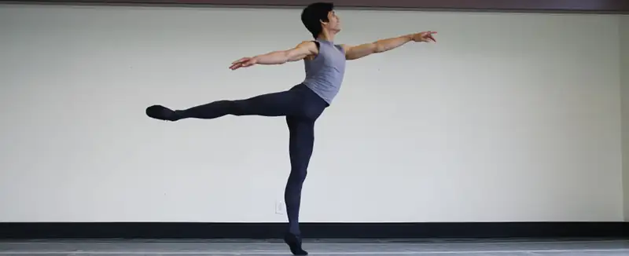
Chapter Outline: Chapter Objectives
After studying this chapter, you will be able to:
- Discuss the bones of the pectoral and pelvic girdles, and describe how these unite the limbs with the axial skeleton
- Describe the bones of the upper limb, including the bones of the arm, forearm, wrist, and hand
- Identify the features of the pelvis and explain how these differ between the adult male and female pelvis
- Describe the bones of the lower limb, including the bones of the thigh, leg, ankle, and foot
- Describe the embryonic formation and growth of the limb bones
Your skeleton provides the internal supporting structure of the body. The adult axial skeleton consists of 80 bones that form the head and body trunk. Attached to this are the limbs, whose 126 bones constitute the appendicular skeleton. These bones are divided into two groups: the bones that are located within the limbs themselves, and the girdle bones that attach the limbs to the axial skeleton. The bones of the shoulder region form the pectoral girdle, which anchors the upper limb to the thoracic cage of the axial skeleton. The lower limb is attached to the vertebral column by the pelvic girdle.
Because of our upright stance, different functional demands are placed upon the upper and lower limbs. Thus, the bones of the lower limbs are adapted for weight-bearing support and stability, as well as for body locomotion via walking or running. In contrast, our upper limbs are not required for these functions. Instead, our upper limbs are highly mobile and can be utilized for a wide variety of activities. The large range of upper limb movements, coupled with the ability to easily manipulate objects with our hands and opposable thumbs, has allowed humans to construct the modern world in which we live.
8.1 The Pectoral Girdle¶
Learning Objectives
By the end of this section, you will be able to:
- Describe the bones that form the pectoral girdle
- List the functions of the pectoral girdle
The appendicular skeleton includes all of the limb bones, plus the bones that unite each limb with the axial skeleton (Figure 8.2). The bones that attach each upper limb to the axial skeleton form the pectoral girdle (shoulder girdle). This consists of two bones, the scapula and clavicle (Figure 8.3). The clavicle (collarbone) is an S-shaped bone located on the anterior side of the shoulder. It is attached on its medial end to the sternum of the thoracic cage, which is part of the axial skeleton. The lateral end of the clavicle articulates (joins) with the scapula just above the shoulder joint. You can easily palpate, or feel with your fingers, the entire length of your clavicle.
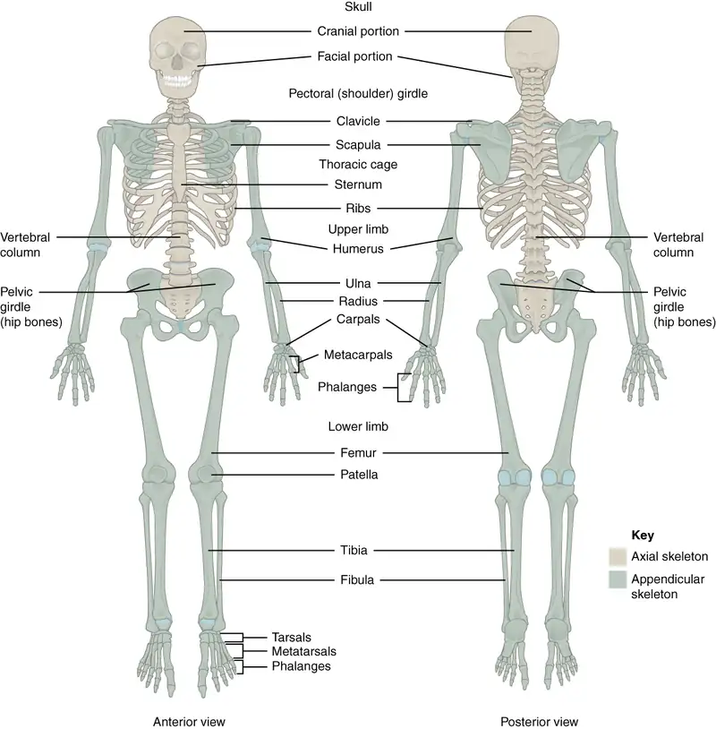
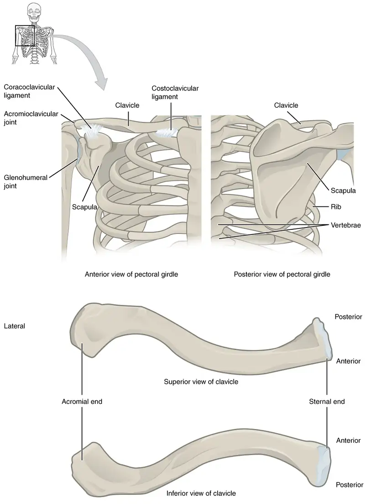
The scapula (shoulder blade) lies on the posterior aspect of the shoulder. It is supported by the clavicle and articulates with the humerus (arm bone) to form the shoulder joint. The scapula is a flat, triangular-shaped bone with a prominent ridge running across its posterior surface. This ridge extends out laterally, where it forms the bony tip of the shoulder and joins with the lateral end of the clavicle. By following along the clavicle, you can palpate out to the bony tip of the shoulder, and from there, you can move back across your posterior shoulder to follow the ridge of the scapula. Move your shoulder around and feel how the clavicle and scapula move together as a unit. Both of these bones serve as important attachment sites for muscles that aid with movements of the shoulder and arm.
The right and left pectoral girdles are not joined to each other, allowing each to operate independently. In addition, the clavicle of each pectoral girdle is anchored to the axial skeleton by a single, highly mobile joint. This allows for the extensive mobility of the entire pectoral girdle, which in turn enhances movements of the shoulder and upper limb.
Clavicle¶
The clavicle is the only long bone that lies in a horizontal position in the body (see Figure 8.3). The clavicle has several important functions. First, anchored by muscles from above, it serves as a strut that extends laterally to support the scapula. This in turn holds the shoulder joint superiorly and laterally from the body trunk, allowing for maximal freedom of motion for the upper limb. The clavicle also transmits forces acting on the upper limb to the sternum and axial skeleton. Finally, it serves to protect the underlying nerves and blood vessels as they pass between the trunk of the body and the upper limb.
The clavicle has three regions: the medial end, the lateral end, and the shaft. The medial end, known as the sternal end of the clavicle, has a triangular shape and articulates with the manubrium portion of the sternum. This forms the sternoclavicular joint, which is the only bony articulation between the pectoral girdle of the upper limb and the axial skeleton. This joint allows considerable mobility, enabling the clavicle and scapula to move in upward/downward and anterior/posterior directions during shoulder movements. The sternoclavicular joint is indirectly supported by the costoclavicular ligament (costo- = “rib”), which spans the sternal end of the clavicle and the underlying first rib. The lateral or acromial end of the clavicle articulates with the acromion of the scapula, the portion of the scapula that forms the bony tip of the shoulder. There are some sex differences in the morphology of the clavicle. In females, the clavicle tends to be shorter, thinner, and less curved. In males, the clavicle is heavier and longer, and has a greater curvature and rougher surfaces where muscles attach, features that are more pronounced in manual workers.
The clavicle is the most commonly fractured bone in the body. Such breaks often occur because of the force exerted on the clavicle when a person falls onto their outstretched arms, or when the lateral shoulder receives a strong blow. Because the sternoclavicular joint is strong and rarely dislocated, excessive force results in the breaking of the clavicle, usually between the middle and lateral portions of the bone. If the fracture is complete, the shoulder and lateral clavicle fragment will drop due to the weight of the upper limb, causing the person to support the sagging limb with their other hand. Muscles acting across the shoulder will also pull the shoulder and lateral clavicle anteriorly and medially, causing the clavicle fragments to override. The clavicle overlies many important blood vessels and nerves for the upper limb, but fortunately, due to the anterior displacement of a broken clavicle, these structures are rarely affected when the clavicle is fractured.
Scapula¶
The scapula is also part of the pectoral girdle and thus plays an important role in anchoring the upper limb to the body. The scapula is located on the posterior side of the shoulder. It is surrounded by muscles on both its anterior (deep) and posterior (superficial) sides, and thus does not articulate with the ribs of the thoracic cage.
The scapula has several important landmarks (Figure 8.4). The three margins or borders of the scapula, named for their positions within the body, are the superior border of the scapula, the medial border of the scapula, and the lateral border of the scapula. The suprascapular notch is located lateral to the midpoint of the superior border. The corners of the triangular scapula, at either end of the medial border, are the superior angle of the scapula, located between the medial and superior borders, and the inferior angle of the scapula, located between the medial and lateral borders. The inferior angle is the most inferior portion of the scapula, and is particularly important because it serves as the attachment point for several powerful muscles involved in shoulder and upper limb movements. The remaining corner of the scapula, between the superior and lateral borders, is the location of the glenoid cavity (glenoid fossa). This shallow depression articulates with the humerus bone of the arm to form the glenohumeral joint (shoulder joint). The small bony bumps located immediately above and below the glenoid cavity are the supraglenoid tubercle and the infraglenoid tubercle, respectively. These provide attachments for muscles of the arm.
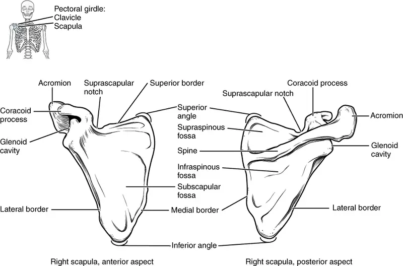
The scapula also has two prominent projections. Toward the lateral end of the superior border, between the suprascapular notch and glenoid cavity, is the hook-like coracoid process (coracoid = “shaped like a crow’s beak”). This process projects anteriorly and curves laterally. At the shoulder, the coracoid process is located inferior to the lateral end of the clavicle. It is anchored to the clavicle by a strong ligament, and serves as the attachment site for muscles of the anterior chest and arm. On the posterior aspect, the spine of the scapula is a long and prominent ridge that runs across its upper portion. Extending laterally from the spine is a flattened and expanded region called the acromion or acromial process. The acromion forms the bony tip of the superior shoulder region and articulates with the lateral end of the clavicle, forming the acromioclavicular joint (see Figure 8.3). Together, the clavicle, acromion, and spine of the scapula form a V-shaped bony line that provides for the attachment of neck and back muscles that act on the shoulder, as well as muscles that pass across the shoulder joint to act on the arm.
The scapula has three depressions, each of which is called a fossa (plural = fossae). Two of these are found on the posterior scapula, above and below the scapular spine. Superior to the spine is the narrow supraspinous fossa, and inferior to the spine is the broad infraspinous fossa. The anterior (deep) surface of the scapula forms the broad subscapular fossa. All of these fossae provide large surface areas for the attachment of muscles that cross the shoulder joint to act on the humerus.
The acromioclavicular joint transmits forces from the upper limb to the clavicle. The ligaments around this joint are relatively weak. A hard fall onto the elbow or outstretched hand can stretch or tear the acromioclavicular ligaments, resulting in a moderate injury to the joint. However, the primary support for the acromioclavicular joint comes from a very strong ligament called the coracoclavicular ligament (see Figure 8.3). This connective tissue band anchors the coracoid process of the scapula to the inferior surface of the acromial end of the clavicle and thus provides important indirect support for the acromioclavicular joint. Following a strong blow to the lateral shoulder, such as when a hockey player is driven into the boards, a complete dislocation of the acromioclavicular joint can result. In this case, the acromion is thrust under the acromial end of the clavicle, resulting in ruptures of both the acromioclavicular and coracoclavicular ligaments. The scapula then separates from the clavicle, with the weight of the upper limb pulling the shoulder downward. This dislocation injury of the acromioclavicular joint is known as a “shoulder separation” and is common in contact sports such as hockey, football, or martial arts.
8.2 Bones of the Upper Limb¶
Learning Objectives
By the end of this section, you will be able to:
- Identify the divisions of the upper limb and describe the bones in each region
- List the bones and bony landmarks that articulate at each joint of the upper limb
The upper limb is divided into three regions. These consist of the arm, located between the shoulder and elbow joints; the forearm, which is between the elbow and wrist joints; and the hand, which is located distal to the wrist. There are 30 bones in each upper limb (see Figure 8.2). The humerus is the single bone of the upper arm, and the ulna (medially) and the radius (laterally) are the paired bones of the forearm. The base of the hand contains eight bones, each called a carpal bone, and the palm of the hand is formed by five bones, each called a metacarpal bone. The fingers and thumb contain a total of 14 bones, each of which is a phalanx bone of the hand.
Humerus¶
The humerus is the single bone of the upper arm region (Figure 8.5). At its proximal end is the head of the humerus. This is the large, round, smooth region that faces medially. The head articulates with the glenoid cavity of the scapula to form the glenohumeral (shoulder) joint. The margin of the smooth area of the head is the anatomical neck of the humerus. Located on the lateral side of the proximal humerus is an expanded bony area called the greater tubercle. The smaller lesser tubercle of the humerus is found on the anterior aspect of the humerus. Both the greater and lesser tubercles serve as attachment sites for muscles that act across the shoulder joint. Passing between the greater and lesser tubercles is the narrow intertubercular groove (sulcus), which is also known as the bicipital groove because it provides passage for a tendon of the biceps brachii muscle. The surgical neck is located at the base of the expanded, proximal end of the humerus, where it joins the narrow shaft of the humerus. The surgical neck is a common site of arm fractures. The deltoid tuberosity is a roughened, V-shaped region located on the lateral side in the middle of the humerus shaft. As its name indicates, it is the site of attachment for the deltoid muscle.
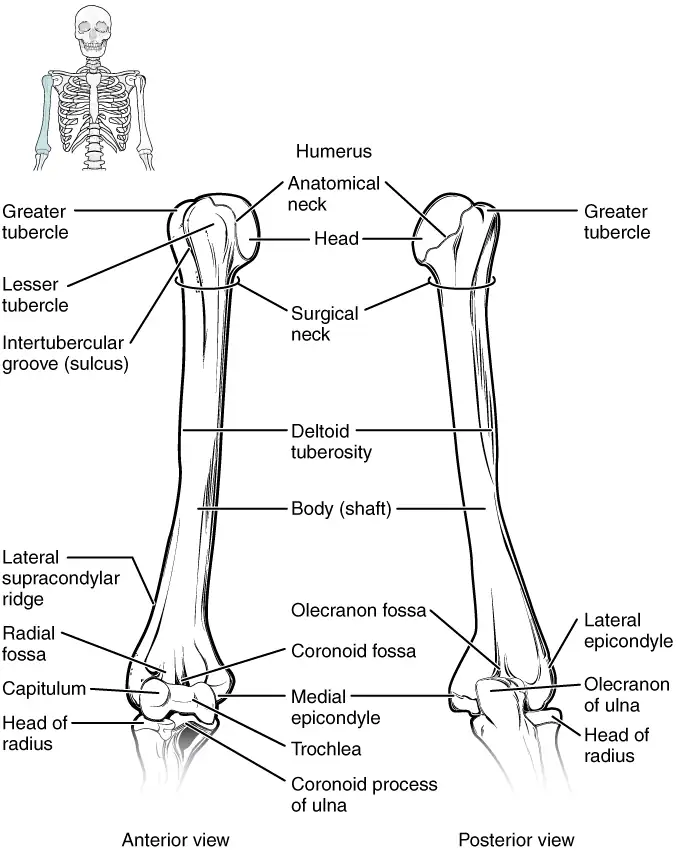
Distally, the humerus becomes flattened. The prominent bony projection on the medial side is the medial epicondyle of the humerus. The much smaller lateral epicondyle of the humerus is found on the lateral side of the distal humerus. The roughened ridge of bone above the lateral epicondyle is the lateral supracondylar ridge. All of these areas are attachment points for muscles that act on the forearm, wrist, and hand. The powerful grasping muscles of the anterior forearm arise from the medial epicondyle, which is thus larger and more robust than the lateral epicondyle that gives rise to the weaker posterior forearm muscles.
The distal end of the humerus has two articulation areas, which join the ulna and radius bones of the forearm to form the elbow joint. The more medial of these areas is the trochlea, a spindle- or pulley-shaped region (trochlea = “pulley”), which articulates with the ulna bone. Immediately lateral to the trochlea is the capitulum (“small head”), a knob-like structure located on the anterior surface of the distal humerus. The capitulum articulates with the radius bone of the forearm. Just above these bony areas are two small depressions. These spaces accommodate the forearm bones when the elbow is fully bent (flexed). Superior to the trochlea is the coronoid fossa, which receives the coronoid process of the ulna, and above the capitulum is the radial fossa, which receives the head of the radius when the elbow is flexed. Similarly, the posterior humerus has the olecranon fossa, a larger depression that receives the olecranon process of the ulna when the forearm is fully extended.
Ulna¶
The ulna is the medial bone of the forearm. It runs parallel to the radius, which is the lateral bone of the forearm (Figure 8.6). The proximal end of the ulna resembles a crescent wrench with its large, C-shaped trochlear notch. This region articulates with the trochlea of the humerus as part of the elbow joint. The inferior margin of the trochlear notch is formed by a prominent lip of bone called the coronoid process of the ulna. Just below this on the anterior ulna is a roughened area called the ulnar tuberosity. To the lateral side and slightly inferior to the trochlear notch is a small, smooth area called the radial notch of the ulna. This area is the site of articulation between the proximal radius and the ulna, forming the proximal radioulnar joint. The posterior and superior portions of the proximal ulna make up the olecranon process, which forms the bony tip of the elbow.
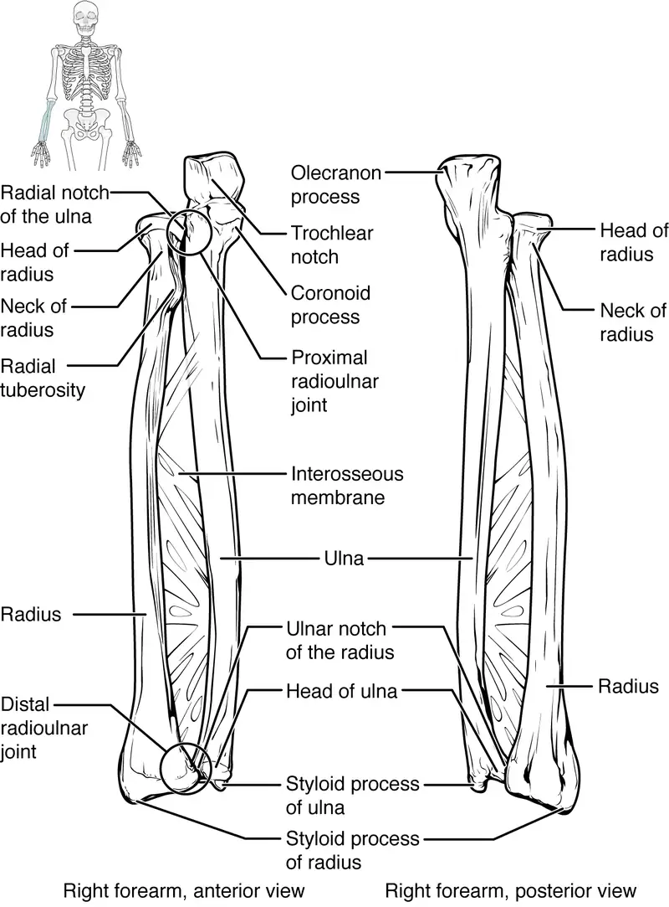
More distal is the shaft of the ulna. The lateral side of the shaft forms a ridge called the interosseous border of the ulna. This is the line of attachment for the interosseous membrane of the forearm, a sheet of dense connective tissue that unites the ulna and radius bones. The small, rounded area that forms the distal end is the head of the ulna. Projecting from the posterior side of the ulnar head is the styloid process of the ulna, a short bony projection. This serves as an attachment point for a connective tissue structure that unites the distal ends of the ulna and radius.
In the anatomical position, with the elbow fully extended and the palms facing forward, the arm and forearm do not form a straight line. Instead, the forearm deviates laterally by 5–15 degrees from the line of the arm. This deviation is called the carrying angle. It allows the forearm and hand to swing freely or to carry an object without hitting the hip. The carrying angle is larger in females to accommodate their wider pelvis.
Radius¶
The radius runs parallel to the ulna, on the lateral (thumb) side of the forearm (see Figure 8.6). The head of the radius is a disc-shaped structure that forms the proximal end. The small depression on the surface of the head articulates with the capitulum of the humerus as part of the elbow joint, whereas the smooth, outer margin of the head articulates with the radial notch of the ulna at the proximal radioulnar joint. The neck of the radius is the narrowed region immediately below the expanded head. Inferior to this point on the medial side is the radial tuberosity, an oval-shaped, bony protuberance that serves as a muscle attachment point. The shaft of the radius is slightly curved and has a small ridge along its medial side. This ridge forms the interosseous border of the radius, which, like the similar border of the ulna, is the line of attachment for the interosseous membrane that unites the two forearm bones. The distal end of the radius has a smooth surface for articulation with two carpal bones to form the radiocarpal joint or wrist joint (Figure 8.7 and Figure 8.8). On the medial side of the distal radius is the ulnar notch of the radius. This shallow depression articulates with the head of the ulna, which together form the distal radioulnar joint. The lateral end of the radius has a pointed projection called the styloid process of the radius. This provides attachment for ligaments that support the lateral side of the wrist joint. Compared to the styloid process of the ulna, the styloid process of the radius projects more distally, thereby limiting the range of movement for lateral deviations of the hand at the wrist joint.
Interactive
Watch this video to see how fractures of the distal radius bone can affect the wrist joint. Explain the problems that may occur if a fracture of the distal radius involves the joint surface of the radiocarpal joint of the wrist.
Carpal Bones¶
The wrist and base of the hand are formed by a series of eight small carpal bones (see Figure 8.7). The carpal bones are arranged in two rows, forming a proximal row of four carpal bones and a distal row of four carpal bones. The bones in the proximal row, running from the lateral (thumb) side to the medial side, are the scaphoid (“boat-shaped”), lunate (“moon-shaped”), triquetrum (“three-cornered”), and pisiform (“pea-shaped”) bones. The small, rounded pisiform bone articulates with the anterior surface of the triquetrum bone. The pisiform thus projects anteriorly, where it forms the bony bump that can be felt at the medial base of your hand. The distal bones (lateral to medial) are the trapezium (“table”), trapezoid (“resembles a table”), capitate (“head-shaped”), and hamate (“hooked bone”) bones. The hamate bone is characterized by a prominent bony extension on its anterior side called the hook of the hamate bone.
A helpful mnemonic for remembering the arrangement of the carpal bones is “So Long To Pinky, Here Comes The Thumb.” This mnemonic starts on the lateral side and names the proximal bones from lateral to medial (scaphoid, lunate, triquetrum, pisiform), then makes a U-turn to name the distal bones from medial to lateral (hamate, capitate, trapezoid, trapezium). Thus, it starts and finishes on the lateral side.
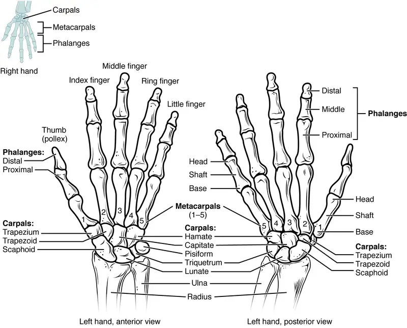
The carpal bones form the base of the hand. This can be seen in the radiograph (X-ray image) of the hand that shows the relationships of the hand bones to the skin creases of the hand (see Figure 8.8). Within the carpal bones, the four proximal bones are united to each other by ligaments to form a unit. Only three of these bones, the scaphoid, lunate, and triquetrum, contribute to the radiocarpal joint. The scaphoid and lunate bones articulate directly with the distal end of the radius, whereas the triquetrum bone articulates with a fibrocartilaginous pad that spans the radius and styloid process of the ulna. The distal end of the ulna thus does not directly articulate with any of the carpal bones.
The four distal carpal bones are also held together as a group by ligaments. The proximal and distal rows of carpal bones articulate with each other to form the midcarpal joint (see Figure 8.8). Together, the radiocarpal and midcarpal joints are responsible for all movements of the hand at the wrist. The distal carpal bones also articulate with the metacarpal bones of the hand.
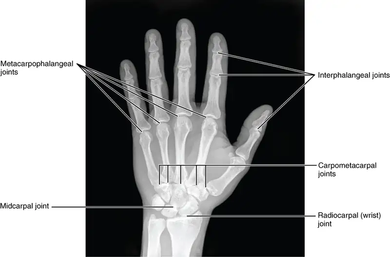
In the articulated hand, the carpal bones form a U-shaped grouping. A strong ligament called the flexor retinaculum spans the top of this U-shaped area to maintain this grouping of the carpal bones. The flexor retinaculum is attached laterally to the trapezium and scaphoid bones, and medially to the hamate and pisiform bones. Together, the carpal bones and the flexor retinaculum form a passageway called the carpal tunnel, with the carpal bones forming the walls and floor, and the flexor retinaculum forming the roof of this space (Figure 8.9). The tendons of nine muscles of the anterior forearm and an important nerve pass through this narrow tunnel to enter the hand. Overuse of the muscle tendons or wrist injury can produce inflammation and swelling within this space. This produces compression of the nerve, resulting in carpal tunnel syndrome, which is characterized by pain or numbness, and muscle weakness in those areas of the hand supplied by this nerve.
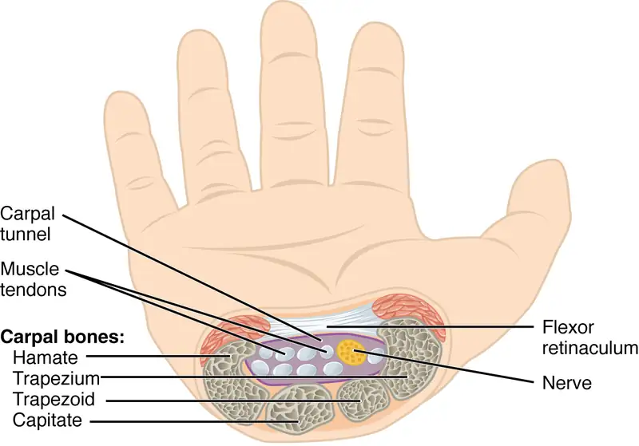
Metacarpal Bones¶
The palm of the hand contains five elongated metacarpal bones. These bones lie between the carpal bones of the wrist and the bones of the fingers and thumb (see Figure 8.7). The proximal end of each metacarpal bone articulates with one of the distal carpal bones. Each of these articulations is a carpometacarpal joint (see Figure 8.8). The expanded distal end of each metacarpal bone articulates at the metacarpophalangeal joint with the proximal phalanx bone of the thumb or one of the fingers. The distal end also forms the knuckles of the hand, at the base of the fingers. The metacarpal bones are numbered 1–5, beginning at the thumb.
The first metacarpal bone, at the base of the thumb, is separated from the other metacarpal bones. This allows it a freedom of motion that is independent of the other metacarpal bones, which is very important for thumb mobility. The remaining metacarpal bones are united together to form the palm of the hand. The second and third metacarpal bones are firmly anchored in place and are immobile. However, the fourth and fifth metacarpal bones have limited anterior-posterior mobility, a motion that is greater for the fifth bone. This mobility is important during power gripping with the hand (Figure 8.10). The anterior movement of these bones, particularly the fifth metacarpal bone, increases the strength of contact for the medial hand during gripping actions.
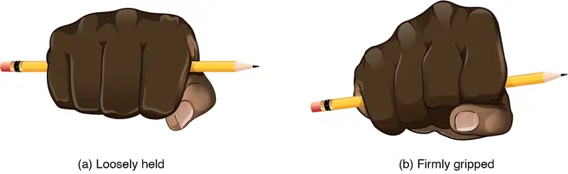
Phalanx Bones¶
The fingers and thumb contain 14 bones, each of which is called a phalanx bone (plural = phalanges), named after the ancient Greek phalanx (a rectangular block of soldiers). The thumb (pollex) is digit number 1 and has two phalanges, a proximal phalanx, and a distal phalanx bone (see Figure 8.7). Digits 2 (index finger) through 5 (little finger) have three phalanges each, called the proximal, middle, and distal phalanx bones. An interphalangeal joint is one of the articulations between adjacent phalanges of the digits (see Figure 8.8).
Interactive
Visit this site to explore the bones and joints of the hand.
Disorders of the Appendicular System: Fractures of Upper Limb Bones
Due to our constant use of the hands and the rest of our upper limbs, an injury to any of these areas will cause a significant loss of functional ability. Many fractures result from a hard fall onto an outstretched hand. The resulting transmission of force up the limb may result in a fracture of the humerus, radius, or scaphoid bones. These injuries are especially common in elderly people whose bones are weakened due to osteoporosis.
Falls onto the hand or elbow, or direct blows to the arm, can result in fractures of the humerus (Figure 8.11). Following a fall, fractures at the surgical neck, the region at which the expanded proximal end of the humerus joins with the shaft, can result in an impacted fracture, in which the distal portion of the humerus is driven into the proximal portion. Falls or blows to the arm can also produce transverse or spiral fractures of the humeral shaft.
In children, a fall onto the tip of the elbow frequently results in a distal humerus fracture. In these, the olecranon of the ulna is driven upward, resulting in a fracture across the distal humerus, above both epicondyles (supracondylar fracture), or a fracture between the epicondyles, thus separating one or both of the epicondyles from the body of the humerus (intercondylar fracture). With these injuries, the immediate concern is possible compression of the artery to the forearm due to swelling of the surrounding tissues. If compression occurs, the resulting ischemia (lack of oxygen) due to reduced blood flow can quickly produce irreparable damage to the forearm muscles. In addition, four major nerves for shoulder and upper limb muscles are closely associated with different regions of the humerus, and thus, humeral fractures may also damage these nerves.
Another frequent injury following a fall onto an outstretched hand is a Colles fracture (“col-lees”) of the distal radius (see Figure 8.11). This involves a complete transverse fracture across the distal radius that drives the separated distal fragment of the radius posteriorly and superiorly. This injury results in a characteristic “dinner fork” bend of the forearm just above the wrist due to the posterior displacement of the hand. This is the most frequent forearm fracture and is a common injury in persons over the age of 50, particularly in older people with osteoporosis. It also commonly occurs following a high-speed fall onto the hand during activities such as snowboarding or skating.
The most commonly fractured carpal bone is the scaphoid, often resulting from a fall onto the hand. Deep pain at the lateral wrist may yield an initial diagnosis of a wrist sprain, but a radiograph taken several weeks after the injury, after tissue swelling has subsided, will reveal the fracture. Due to the poor blood supply to the scaphoid bone, healing will be slow and there is the danger of bone necrosis and subsequent degenerative joint disease of the wrist.
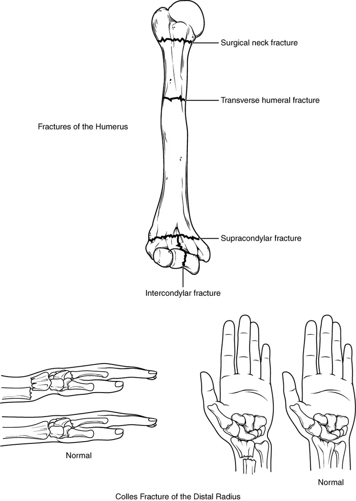
Interactive
Watch this video to learn about a Colles fracture, a break of the distal radius, usually caused by falling onto an outstretched hand. When would surgery be required and how would the fracture be repaired in this case?
8.3 The Pelvic Girdle and Pelvis¶
Learning Objectives
By the end of this section, you will be able to:
- Define the pelvic girdle and describe the bones and ligaments of the pelvis
- Explain the three regions of the hip bone and identify their bony landmarks
- Describe the openings of the pelvis and the boundaries of the greater and lesser pelvis
The pelvic girdle (hip girdle) is formed by a single bone, the hip bone or coxal bone (coxal = “hip”), which serves as the attachment point for each lower limb. Each hip bone, in turn, is firmly joined to the axial skeleton via its attachment to the sacrum of the vertebral column. The right and left hip bones also converge anteriorly to attach to each other. The bony pelvis is the entire structure formed by the two hip bones, the sacrum, and, attached inferiorly to the sacrum, the coccyx (Figure 8.12).
Unlike the bones of the pectoral girdle, which are highly mobile to enhance the range of upper limb movements, the bones of the pelvis are strongly united to each other to form a largely immobile, weight-bearing structure. This is important for stability because it enables the weight of the body to be easily transferred laterally from the vertebral column, through the pelvic girdle and hip joints, and into either lower limb whenever the other limb is not bearing weight. Thus, the immobility of the pelvis provides a strong foundation for the upper body as it rests on top of the mobile lower limbs.
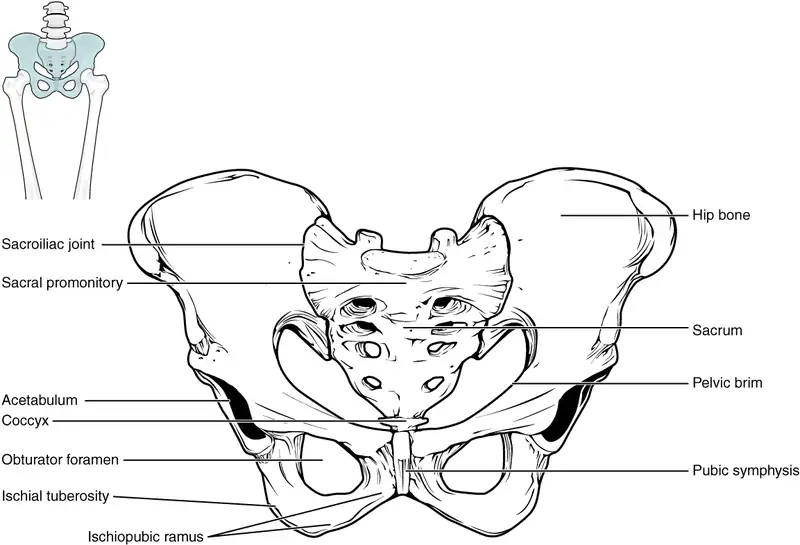
Hip Bone¶
The hip bone, or coxal bone, forms the pelvic girdle portion of the pelvis. The paired hip bones are the large, curved bones that form the lateral and anterior aspects of the pelvis. Each adult hip bone is formed by three separate bones that fuse together during the late teenage years. These bony components are the ilium, ischium, and pubis (Figure 8.13). These names are retained and used to define the three regions of the adult hip bone.
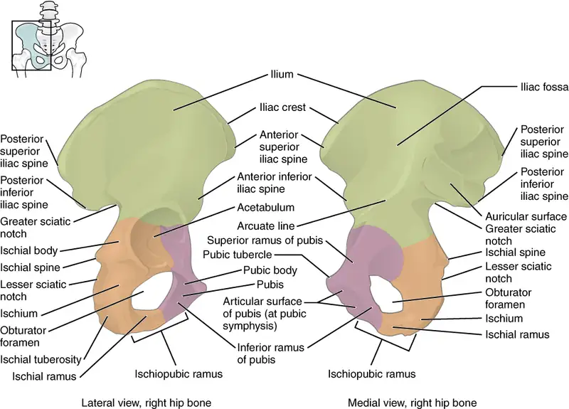
The ilium is the fan-like, superior region that forms the largest part of the hip bone. It is firmly united to the sacrum at the largely immobile sacroiliac joint (see Figure 8.12). The ischium forms the posteroinferior region of each hip bone. It supports the body when sitting. The pubis forms the anterior portion of the hip bone. The pubis curves medially, where it joins to the pubis of the opposite hip bone at a specialized joint called the pubic symphysis.
Ilium¶
When you place your hands on your waist, you can feel the arching, superior margin of the ilium along your waistline (see Figure 8.13). This curved, superior margin of the ilium is the iliac crest. The rounded, anterior termination of the iliac crest is the anterior superior iliac spine. This important bony landmark can be felt at your anterolateral hip. Inferior to the anterior superior iliac spine is a rounded protuberance called the anterior inferior iliac spine. Both of these iliac spines serve as attachment points for muscles of the thigh. Posteriorly, the iliac crest curves downward to terminate as the posterior superior iliac spine. Muscles and ligaments surround but do not cover this bony landmark, thus sometimes producing a depression seen as a “dimple” located on the lower back. More inferiorly is the posterior inferior iliac spine. This is located at the inferior end of a large, roughened area called the auricular surface of the ilium. The auricular surface articulates with the auricular surface of the sacrum to form the sacroiliac joint. Both the posterior superior and posterior inferior iliac spines serve as attachment points for the muscles and very strong ligaments that support the sacroiliac joint.
The shallow depression located on the anteromedial (internal) surface of the upper ilium is called the iliac fossa. The inferior margin of this space is formed by the arcuate line of the ilium, the ridge formed by the pronounced change in curvature between the upper and lower portions of the ilium. The large, inverted U-shaped indentation located on the posterior margin of the lower ilium is called the greater sciatic notch.
Ischium¶
The ischium forms the posterolateral portion of the hip bone (see Figure 8.13). The large, roughened area of the inferior ischium is the ischial tuberosity. This serves as the attachment for the posterior thigh muscles and also carries the weight of the body when sitting. You can feel the ischial tuberosity if you wiggle your pelvis against the seat of a chair. Projecting superiorly and anteriorly from the ischial tuberosity is a narrow segment of bone called the ischial ramus. The slightly curved posterior margin of the ischium above the ischial tuberosity is the lesser sciatic notch. The bony projection separating the lesser sciatic notch and greater sciatic notch is the ischial spine.
Pubis¶
The pubis forms the anterior portion of the hip bone (see Figure 8.13). The enlarged medial portion of the pubis is the pubic body. Located superiorly on the pubic body is a small bump called the pubic tubercle. The superior pubic ramus is the segment of bone that passes laterally from the pubic body to join the ilium. The narrow ridge running along the superior margin of the superior pubic ramus is the pectineal line of the pubis.
The pubic body is joined to the pubic body of the opposite hip bone by the pubic symphysis. Extending downward and laterally from the body is the inferior pubic ramus. The pubic arch is the bony structure formed by the pubic symphysis, and the bodies and inferior pubic rami of the adjacent pubic bones. The inferior pubic ramus extends downward to join the ischial ramus. Together, these form the single ischiopubic ramus, which extends from the pubic body to the ischial tuberosity. The inverted V-shape formed as the ischiopubic rami from both sides come together at the pubic symphysis is called the subpubic angle.
Pelvis¶
The pelvis consists of four bones: the right and left hip bones, the sacrum, and the coccyx (see Figure 8.12). The pelvis has several important functions. Its primary role is to support the weight of the upper body when sitting and to transfer this weight to the lower limbs when standing. It serves as an attachment point for trunk and lower limb muscles, and also protects the internal pelvic organs. When standing in the anatomical position, the pelvis is tilted anteriorly. In this position, the anterior superior iliac spines and the pubic tubercles lie in the same vertical plane, and the anterior (internal) surface of the sacrum faces forward and downward.
The three areas of each hip bone, the ilium, pubis, and ischium, converge centrally to form a deep, cup-shaped cavity called the acetabulum. This is located on the lateral side of the hip bone and is part of the hip joint. The large opening in the anteroinferior hip bone between the ischium and pubis is the obturator foramen. This space is largely filled in by a layer of connective tissue and serves for the attachment of muscles on both its internal and external surfaces.
Several ligaments unite the bones of the pelvis (Figure 8.14). The largely immobile sacroiliac joint is supported by a pair of strong ligaments that are attached between the sacrum and ilium portions of the hip bone. These are the anterior sacroiliac ligament on the anterior side of the joint and the posterior sacroiliac ligament on the posterior side. Also spanning the sacrum and hip bone are two additional ligaments. The sacrospinous ligament runs from the sacrum to the ischial spine, and the sacrotuberous ligament runs from the sacrum to the ischial tuberosity. These ligaments help to support and immobilize the sacrum as it carries the weight of the body.
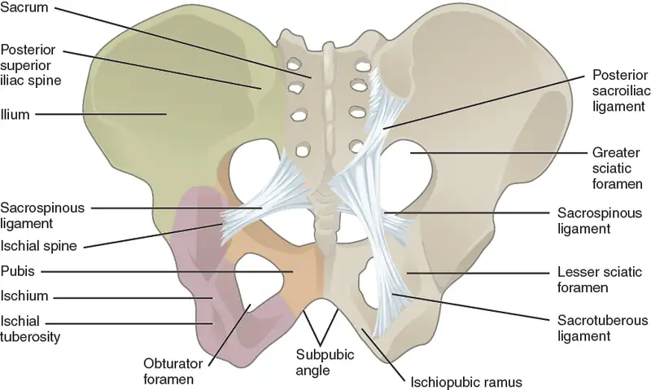
Interactive
Watch this video for a 3-D view of the pelvis and its associated ligaments. What is the large opening in the bony pelvis, located between the ischium and pubic regions, and what two parts of the pubis contribute to the formation of this opening?
The sacrospinous and sacrotuberous ligaments also help to define two openings on the posterolateral sides of the pelvis through which muscles, nerves, and blood vessels for the lower limb exit. The superior opening is the greater sciatic foramen. This large opening is formed by the greater sciatic notch of the hip bone, the sacrum, and the sacrospinous ligament. The smaller, more inferior lesser sciatic foramen is formed by the lesser sciatic notch of the hip bone, together with the sacrospinous and sacrotuberous ligaments.
The space enclosed by the bony pelvis is divided into two regions (Figure 8.15). The broad, superior region, defined laterally by the large, fan-like portion of the upper hip bone, is called the greater pelvis (greater pelvic cavity; false pelvis). This broad area is occupied by portions of the small and large intestines, and because it is more closely associated with the abdominal cavity, it is sometimes referred to as the false pelvis. More inferiorly, the narrow, rounded space of the lesser pelvis (lesser pelvic cavity; true pelvis) contains the bladder and other pelvic organs, and thus is also known as the true pelvis. The pelvic brim (also known as the pelvic inlet) forms the superior margin of the lesser pelvis, separating it from the greater pelvis. The pelvic brim is defined by a line formed by the upper margin of the pubic symphysis anteriorly, and the pectineal line of the pubis, the arcuate line of the ilium, and the sacral promontory (the anterior margin of the superior sacrum) posteriorly. The inferior limit of the lesser pelvic cavity is called the pelvic outlet. This large opening is defined by the inferior margin of the pubic symphysis anteriorly, and the ischiopubic ramus, the ischial tuberosity, the sacrotuberous ligament, and the inferior tip of the coccyx posteriorly. Because of the anterior tilt of the pelvis, the lesser pelvis is also angled, giving it an anterosuperior (pelvic inlet) to posteroinferior (pelvic outlet) orientation.
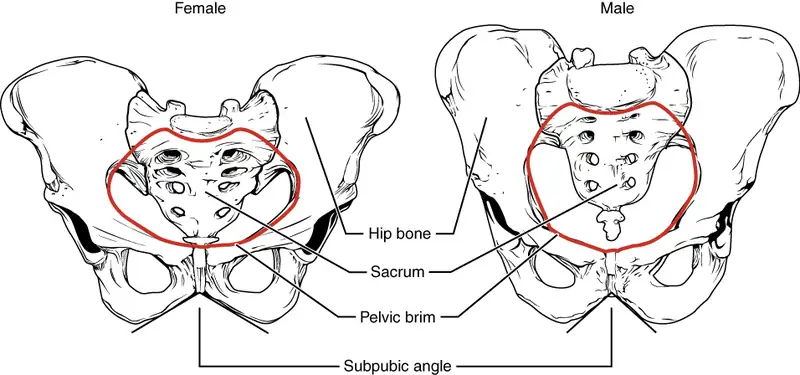
Comparison of the Female and Male Pelvis¶
The differences between the adult female and male pelvis relate to function and body size. In general, the bones of the male pelvis are thicker and heavier, adapted for support of the male’s heavier physical build and stronger muscles. The greater sciatic notch of the male hip bone is narrower and deeper than the broader notch of females. Because the female pelvis is adapted for childbirth, it is wider than the male pelvis, as evidenced by the distance between the anterior superior iliac spines (see Figure 8.15). The ischial tuberosities of females are also farther apart, which increases the size of the pelvic outlet. Because of this increased pelvic width, the subpubic angle is larger in females (greater than 80 degrees) than it is in males (less than 70 degrees). The female sacrum is wider, shorter, and less curved, and the sacral promontory projects less into the pelvic cavity, thus giving the female pelvic inlet (pelvic brim) a more rounded or oval shape compared to males. The lesser pelvic cavity of females is also wider and more shallow than the narrower, deeper, and tapering lesser pelvis of males. Because of the obvious differences between female and male hip bones, this is the one bone of the body that allows for the most accurate sex determination. Table 8.1 provides an overview of the general differences between the female and male pelvis.
Table 8.1
| Overview of Differences between the Female and Male Pelvis | ||
|---|---|---|
| Female pelvis | Male pelvis | |
| Pelvic weight | Bones of the pelvis are lighter and thinner | Bones of the pelvis are thicker and heavier |
| Pelvic inlet shape | Pelvic inlet has a round or oval shape | Pelvic inlet is heart-shaped |
| Lesser pelvic cavity shape | Lesser pelvic cavity is shorter and wider | Lesser pelvic cavity is longer and narrower |
| Subpubic angle | Subpubic angle is greater than 80 degrees | Subpubic angle is less than 70 degrees |
| Pelvic outlet shape | Pelvic outlet is rounded and larger | Pelvic outlet is smaller |
Career Connection: Forensic Pathology and Forensic Anthropology
A forensic pathologist (also known as a medical examiner) is a medically trained physician who has been specifically trained in pathology to examine the bodies of the deceased to determine the cause of death. A forensic pathologist applies understanding of disease as well as toxins, blood and DNA analysis, firearms and ballistics, and other factors to assess the cause and manner of death. At times, a forensic pathologist will be called to testify under oath in situations that involve a possible crime. Forensic pathology is a field that has received much media attention on television shows or following a high-profile death.
While forensic pathologists are responsible for determining whether the cause of someone’s death was natural, by suicide, accidental, or by homicide, there are times when uncovering the cause of death is more complex, and other skills are needed. Forensic anthropology brings the tools and knowledge of physical anthropology and human osteology (the study of the skeleton) to the task of investigating a death. A forensic anthropologist assists medical and legal professionals in identifying human remains. The science behind forensic anthropology involves the study of archaeological excavation; the examination of hair; an understanding of plants, insects, and footprints; the ability to determine how much time has elapsed since the person died; the analysis of past medical history and toxicology; the ability to determine whether there are any postmortem injuries or alterations of the skeleton; and the identification of the decedent (deceased person) using skeletal and dental evidence.
Due to the extensive knowledge and understanding of excavation techniques, a forensic anthropologist is an integral and invaluable team member to have on-site when investigating a crime scene, especially when the recovery of human skeletal remains is involved. When remains are bought to a forensic anthropologist for examination, they must first determine whether the remains are in fact human. Once the remains have been identified as belonging to a person and not to an animal, the next step is to approximate the individual’s age, sex, race, and height. The forensic anthropologist does not determine the cause of death, but rather provides information to the forensic pathologist, who will use all of the data collected to make a final determination regarding the cause of death.
8.4 Bones of the Lower Limb¶
Learning Objectives
By the end of this section, you will be able to:
- Identify the divisions of the lower limb and describe the bones of each region
- Describe the bones and bony landmarks that articulate at each joint of the lower limb
Like the upper limb, the lower limb is divided into three regions. The thigh is that portion of the lower limb located between the hip joint and knee joint. The leg is specifically the region between the knee joint and the ankle joint. Distal to the ankle is the foot. The lower limb contains 30 bones. These are the femur, patella, tibia, fibula, tarsal bones, metatarsal bones, and phalanges (see Figure 8.2). The femur is the single bone of the thigh. The patella is the kneecap and articulates with the distal femur. The tibia is the larger, weight-bearing bone located on the medial side of the leg, and the fibula is the thin bone of the lateral leg. The bones of the foot are divided into three groups. The posterior portion of the foot is formed by a group of seven bones, each of which is known as a tarsal bone, whereas the mid-foot contains five elongated bones, each of which is a metatarsal bone. The toes contain 14 small bones, each of which is a phalanx bone of the foot.
Femur¶
The femur, or thigh bone, is the single bone of the thigh region (Figure 8.16). It is the longest and strongest bone of the body, and accounts for approximately one-quarter of a person’s total height. The rounded, proximal end is the head of the femur, which articulates with the acetabulum of the hip bone to form the hip joint. The fovea capitis is a minor indentation on the medial side of the femoral head that serves as the site of attachment for the ligament of the head of the femur. This ligament spans the femur and acetabulum, but is weak and provides little support for the hip joint. It does, however, carry an important artery that supplies the head of the femur.
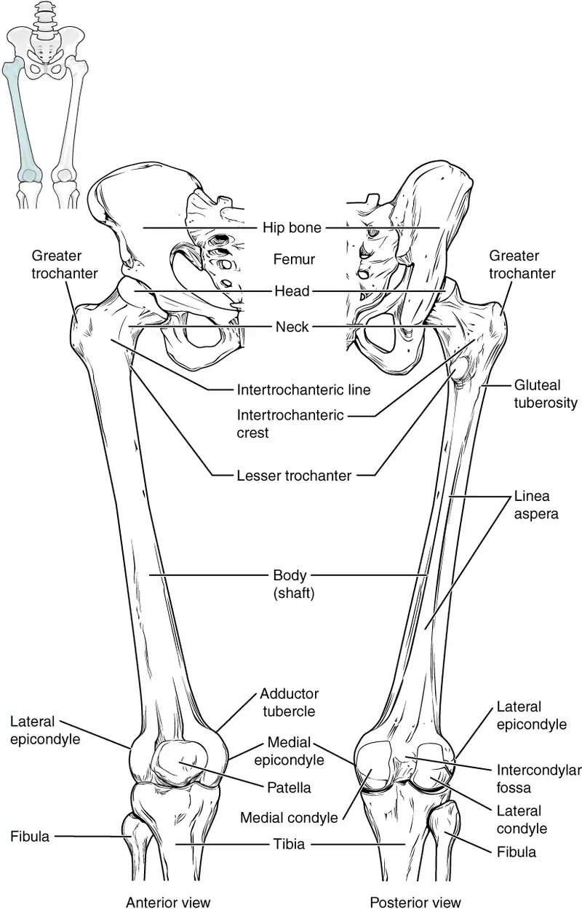
The narrowed region below the head is the neck of the femur. This is a common area for fractures of the femur. The greater trochanter is the large, upward, bony projection located above the base of the neck. Multiple muscles that act across the hip joint attach to the greater trochanter, which, because of its projection from the femur, gives additional leverage to these muscles. The greater trochanter can be felt just under the skin on the lateral side of your upper thigh. The lesser trochanter is a small, bony prominence that lies on the medial aspect of the femur, just below the neck. A single, powerful muscle attaches to the lesser trochanter. Running between the greater and lesser trochanters on the anterior side of the femur is the roughened intertrochanteric line. The trochanters are also connected on the posterior side of the femur by the larger intertrochanteric crest.
The elongated shaft of the femur has a slight anterior bowing or curvature. At its proximal end, the posterior shaft has the gluteal tuberosity, a roughened area extending inferiorly from the greater trochanter. More inferiorly, the gluteal tuberosity becomes continuous with the linea aspera (“rough line”). This is the roughened ridge that passes distally along the posterior side of the mid-femur. Multiple muscles of the hip and thigh regions make long, thin attachments to the femur along the linea aspera.
The distal end of the femur has medial and lateral bony expansions. On the lateral side, the smooth portion that covers the distal and posterior aspects of the lateral expansion is the lateral condyle of the femur. The roughened area on the outer, lateral side of the condyle is the lateral epicondyle of the femur. Similarly, the smooth region of the distal and posterior medial femur is the medial condyle of the femur, and the irregular outer, medial side of this is the medial epicondyle of the femur. The lateral and medial condyles articulate with the tibia to form the knee joint. The epicondyles provide attachment for muscles and supporting ligaments of the knee. The adductor tubercle is a small bump located at the superior margin of the medial epicondyle. Posteriorly, the medial and lateral condyles are separated by a deep depression called the intercondylar fossa. Anteriorly, the smooth surfaces of the condyles join together to form a wide groove called the patellar surface, which provides for articulation with the patella bone. The combination of the medial and lateral condyles with the patellar surface gives the distal end of the femur a horseshoe (U) shape.
Interactive
Watch this video to view how a fracture of the mid-femur is surgically repaired. How are the two portions of the broken femur stabilized during surgical repair of a fractured femur?
Patella¶
The patella (kneecap) is the largest sesamoid bone of the body (see Figure 8.16). A sesamoid bone is a bone that is incorporated into the tendon of a muscle where that tendon crosses a joint. The sesamoid bone articulates with the underlying bones to prevent damage to the muscle tendon due to rubbing against the bones during movements of the joint. The patella is found in the tendon of the quadriceps femoris muscle, the large muscle of the anterior thigh that passes across the anterior knee to attach to the tibia. The patella articulates with the patellar surface of the femur and thus prevents rubbing of the muscle tendon against the distal femur. The patella also lifts the tendon away from the knee joint, which increases the leverage power of the quadriceps femoris muscle as it acts across the knee. The patella does not articulate with the tibia.
Interactive
Visit this site to watch a virtual knee replacement surgery. The prosthetic knee components must be properly aligned to function properly. How is this alignment ensured?
Homeostatic Imbalances: Runner’s Knee
Runner’s knee, also known as patellofemoral syndrome, is the most common overuse injury among runners. It is most frequent in adolescents and young adults, and is more common in females. It often results from excessive running, particularly downhill, but may also occur in athletes who do a lot of knee bending, such as jumpers, skiers, cyclists, weight lifters, and soccer players. It is felt as a dull, aching pain around the front of the knee and deep to the patella. The pain may be felt when walking or running, going up or down stairs, kneeling or squatting, or after sitting with the knee bent for an extended period.
Patellofemoral syndrome may be initiated by a variety of causes, including individual variations in the shape and movement of the patella, a direct blow to the patella, or flat feet or improper shoes that cause excessive turning in or out of the feet or leg. These factors may cause in an imbalance in the muscle pull that acts on the patella, resulting in an abnormal tracking of the patella that allows it to deviate too far toward the lateral side of the patellar surface on the distal femur.
Because the hips are wider than the knee region, the femur has a diagonal orientation within the thigh, in contrast to the vertically oriented tibia of the leg (Figure 8.17). The Q-angle is a measure of how far the femur is angled laterally away from vertical. The Q-angle is normally 10–15 degrees, with females typically having a larger Q-angle due to their wider pelvis. During extension of the knee, the quadriceps femoris muscle pulls the patella both superiorly and laterally, with the lateral pull greater in females due to their large Q-angle. This makes females more vulnerable to developing patellofemoral syndrome than males. Normally, the large lip on the lateral side of the patellar surface of the femur compensates for the lateral pull on the patella, and thus helps to maintain its proper tracking.
However, if the pull produced by the medial and lateral sides of the quadriceps femoris muscle is not properly balanced, abnormal tracking of the patella toward the lateral side may occur. With continued use, this produces pain and could result in damage to the articulating surfaces of the patella and femur, and the possible future development of arthritis. Treatment generally involves stopping the activity that produces knee pain for a period of time, followed by a gradual resumption of activity. Proper strengthening of the quadriceps femoris muscle to correct for imbalances is also important to help prevent reoccurrence.
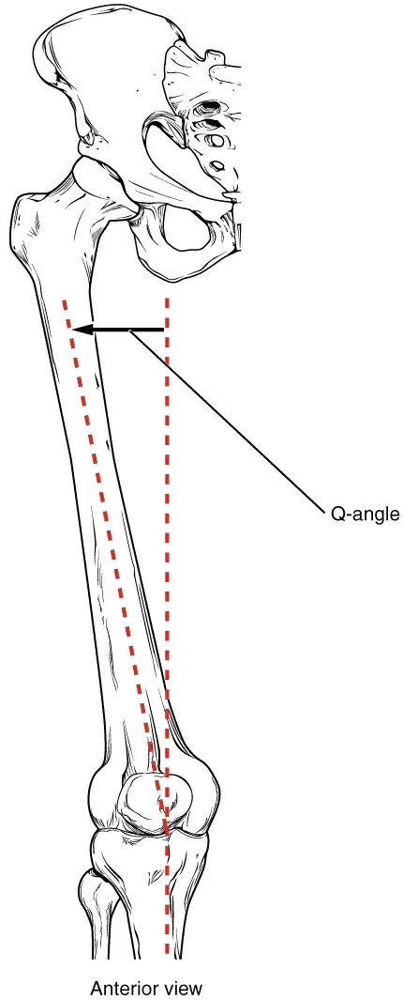
Tibia¶
The tibia (shin bone) is the medial bone of the leg and is larger than the fibula, with which it is paired (Figure 8.18). The tibia is the main weight-bearing bone of the lower leg and the second longest bone of the body, after the femur. The medial side of the tibia is located immediately under the skin, allowing it to be easily palpated down the entire length of the medial leg.
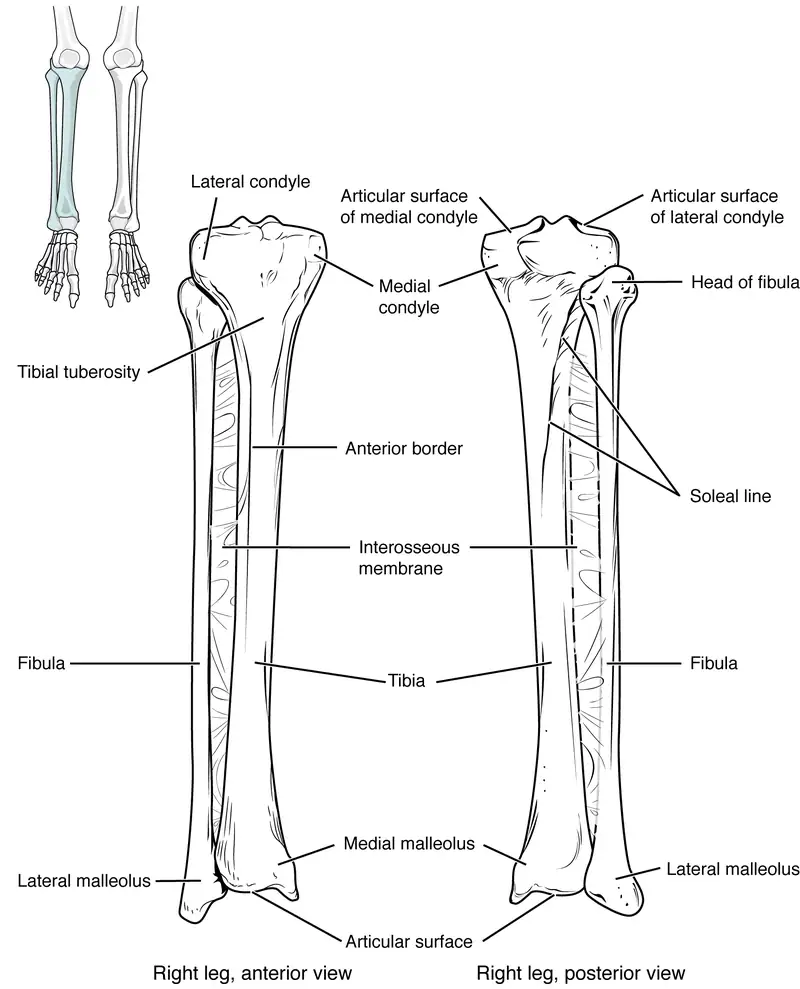
The proximal end of the tibia is greatly expanded. The two sides of this expansion form the medial condyle of the tibia and the lateral condyle of the tibia. The tibia does not have epicondyles. The top surface of each condyle is smooth and flattened. These areas articulate with the medial and lateral condyles of the femur to form the knee joint. Between the articulating surfaces of the tibial condyles is the intercondylar eminence, an irregular, elevated area that serves as the inferior attachment point for two supporting ligaments of the knee.
The tibial tuberosity is an elevated area on the anterior side of the tibia, near its proximal end. It is the final site of attachment for the muscle tendon associated with the patella. More inferiorly, the shaft of the tibia becomes triangular in shape.
The anterior apex of this triangle forms the anterior border of the tibia, which begins at the tibial tuberosity and runs inferiorly along the length of the tibia. Both the anterior border and the medial side of the triangular shaft are located immediately under the skin and can be easily palpated along the entire length of the tibia. A small ridge running down the lateral side of the tibial shaft is the interosseous border of the tibia. This is for the attachment of the interosseous membrane of the leg, the sheet of dense connective tissue that unites the tibia and fibula bones. Located on the posterior side of the tibia is the soleal line, a diagonally running, roughened ridge that begins below the base of the lateral condyle, and runs down and medially across the proximal third of the posterior tibia. Muscles of the posterior leg attach to this line.
The large expansion found on the medial side of the distal tibia is the medial malleolus (“little hammer”). This forms the large bony bump found on the medial side of the ankle region. Both the smooth surface on the inside of the medial malleolus and the smooth area at the distal end of the tibia articulate with the talus bone of the foot as part of the ankle joint. On the lateral side of the distal tibia is a wide groove called the fibular notch. This area articulates with the distal end of the fibula, forming the distal tibiofibular joint.
Fibula¶
The fibula is the slender bone located on the lateral side of the leg (see Figure 8.18). The fibula does not bear weight. It serves primarily for muscle attachments and thus is largely surrounded by muscles. Only the proximal and distal ends of the fibula can be palpated.
The head of the fibula is the small, knob-like, proximal end of the fibula. It articulates with the inferior aspect of the lateral tibial condyle, forming the proximal tibiofibular joint. The thin shaft of the fibula has the interosseous border of the fibula, a narrow ridge running down its medial side for the attachment of the interosseous membrane that spans the fibula and tibia. The distal end of the fibula forms the lateral malleolus, which forms the easily palpated bony bump on the lateral side of the ankle. The deep (medial) side of the lateral malleolus articulates with the talus bone of the foot as part of the ankle joint. The distal fibula also articulates with the fibular notch of the tibia.
Tarsal Bones¶
The posterior half of the foot is formed by seven tarsal bones (Figure 8.19). The most superior bone is the talus. This has a relatively square-shaped, upper surface that articulates with the tibia and fibula to form the ankle joint. Three areas of articulation form the ankle joint: The superomedial surface of the talus bone articulates with the medial malleolus of the tibia, the top of the talus articulates with the distal end of the tibia, and the lateral side of the talus articulates with the lateral malleolus of the fibula. Inferiorly, the talus articulates with the calcaneus (heel bone), the largest bone of the foot, which forms the heel. Body weight is transferred from the tibia to the talus to the calcaneus, which rests on the ground. The medial calcaneus has a prominent bony extension called the sustentaculum tali (“support for the talus”) that supports the medial side of the talus bone.
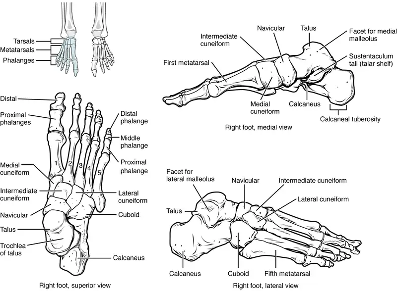
The cuboid bone articulates with the anterior end of the calcaneus bone. The cuboid has a deep groove running across its inferior surface, which provides passage for a muscle tendon. The talus bone articulates anteriorly with the navicular bone, which in turn articulates anteriorly with the three cuneiform (“wedge-shaped”) bones. These bones are the medial cuneiform, the intermediate cuneiform, and the lateral cuneiform. Each of these bones has a broad superior surface and a narrow inferior surface, which together produce the transverse (medial-lateral) curvature of the foot. The navicular and lateral cuneiform bones also articulate with the medial side of the cuboid bone.
Interactive
Use this tutorial to review the bones of the foot. Which tarsal bones are in the proximal, intermediate, and distal groups?
Metatarsal Bones¶
The anterior half of the foot is formed by the five metatarsal bones, which are located between the tarsal bones of the posterior foot and the phalanges of the toes (see Figure 8.19). These elongated bones are numbered 1–5, starting with the medial side of the foot. The first metatarsal bone is shorter and thicker than the others. The second metatarsal is the longest. The base of the metatarsal bone is the proximal end of each metatarsal bone. These articulate with the cuboid or cuneiform bones. The base of the fifth metatarsal has a large, lateral expansion that provides for muscle attachments. This expanded base of the fifth metatarsal can be felt as a bony bump at the midpoint along the lateral border of the foot. The expanded distal end of each metatarsal is the head of the metatarsal bone. Each metatarsal bone articulates with the proximal phalanx of a toe to form a metatarsophalangeal joint. The heads of the metatarsal bones also rest on the ground and form the ball (anterior end) of the foot.
Phalanges¶
The toes contain a total of 14 phalanx bones (phalanges), arranged in a similar manner as the phalanges of the fingers (see Figure 8.19). The toes are numbered 1–5, starting with the big toe (hallux). The big toe has two phalanx bones, the proximal and distal phalanges. The remaining toes all have proximal, middle, and distal phalanges. A joint between adjacent phalanx bones is called an interphalangeal joint.
Interactive
View this link to learn about a bunion, a localized swelling on the medial side of the foot, next to the first metatarsophalangeal joint, at the base of the big toe. What is a bunion and what type of shoe is most likely to cause this to develop?
Arches of the Foot¶
When the foot comes into contact with the ground during walking, running, or jumping activities, the impact of the body weight puts a tremendous amount of pressure and force on the foot. During running, the force applied to each foot as it contacts the ground can be up to 2.5 times your body weight. The bones, joints, ligaments, and muscles of the foot absorb this force, thus greatly reducing the amount of shock that is passed superiorly into the lower limb and body. The arches of the foot play an important role in this shock-absorbing ability. When weight is applied to the foot, these arches will flatten somewhat, thus absorbing energy. When the weight is removed, the arch rebounds, giving “spring” to the step. The arches also serve to distribute body weight side to side and to either end of the foot.
The foot has a transverse arch, a medial longitudinal arch, and a lateral longitudinal arch (see Figure 8.19). The transverse arch forms the medial-lateral curvature of the mid-foot. It is formed by the wedge shapes of the cuneiform bones and bases (proximal ends) of the first to fourth metatarsal bones. This arch helps to distribute body weight from side to side within the foot, thus allowing the foot to accommodate uneven terrain.
The longitudinal arches run down the length of the foot. The lateral longitudinal arch is relatively flat, whereas the medial longitudinal arch is larger (taller). The longitudinal arches are formed by the tarsal bones posteriorly and the metatarsal bones anteriorly. These arches are supported at either end, where they contact the ground. Posteriorly, this support is provided by the calcaneus bone and anteriorly by the heads (distal ends) of the metatarsal bones. The talus bone, which receives the weight of the body, is located at the top of the longitudinal arches. Body weight is then conveyed from the talus to the ground by the anterior and posterior ends of these arches. Strong ligaments unite the adjacent foot bones to prevent disruption of the arches during weight bearing. On the bottom of the foot, additional ligaments tie together the anterior and posterior ends of the arches. These ligaments have elasticity, which allows them to stretch somewhat during weight bearing, thus allowing the longitudinal arches to spread. The stretching of these ligaments stores energy within the foot, rather than passing these forces into the leg. Contraction of the foot muscles also plays an important role in this energy absorption. When the weight is removed, the elastic ligaments recoil and pull the ends of the arches closer together. This recovery of the arches releases the stored energy and improves the energy efficiency of walking.
Stretching of the ligaments that support the longitudinal arches can lead to pain. This can occur in overweight individuals, with people who have jobs that involve standing for long periods of time (such as a waitress), or walking or running long distances. If stretching of the ligaments is prolonged, excessive, or repeated, it can result in a gradual lengthening of the supporting ligaments, with subsequent depression or collapse of the longitudinal arches, particularly on the medial side of the foot. This condition is called pes planus (“flat foot” or “fallen arches”).
8.5 Development of the Appendicular Skeleton¶
Learning Objectives
By the end of this section, you will be able to:
- Describe the growth and development of the embryonic limb buds
- Discuss the appearance of primary and secondary ossification centers
Embryologically, the appendicular skeleton arises from mesenchyme, a type of embryonic tissue that can differentiate into many types of tissues, including bone or muscle tissue. Mesenchyme gives rise to the bones of the upper and lower limbs, as well as to the pectoral and pelvic girdles. Development of the limbs begins near the end of the fourth embryonic week, with the upper limbs appearing first. Thereafter, the development of the upper and lower limbs follows similar patterns, with the lower limbs lagging behind the upper limbs by a few days.
Limb Growth¶
Each upper and lower limb initially develops as a small bulge called a limb bud, which appears on the lateral side of the early embryo. The upper limb bud appears near the end of the fourth week of development, with the lower limb bud appearing shortly after (Figure 8.20).
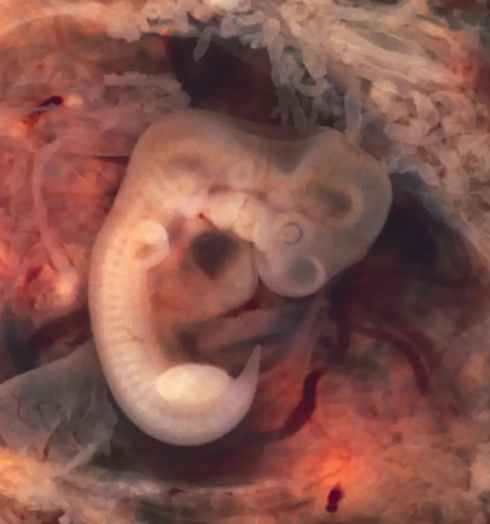
Initially, the limb buds consist of a core of mesenchyme covered by a layer of ectoderm. The ectoderm at the end of the limb bud thickens to form a narrow crest called the apical ectodermal ridge. This ridge stimulates the underlying mesenchyme to rapidly proliferate, producing the outgrowth of the developing limb. As the limb bud elongates, cells located farther from the apical ectodermal ridge slow their rates of cell division and begin to differentiate. In this way, the limb develops along a proximal-to-distal axis.
During the sixth week of development, the distal ends of the upper and lower limb buds expand and flatten into a paddle shape. This region will become the hand or foot. The wrist or ankle areas then appear as a constriction that develops at the base of the paddle. Shortly after this, a second constriction on the limb bud appears at the future site of the elbow or knee. Within the paddle, areas of tissue undergo cell death, producing separations between the growing fingers and toes. Also during the sixth week of development, mesenchyme within the limb buds begins to differentiate into hyaline cartilage that will form models of the future limb bones.
The early outgrowth of the upper and lower limb buds initially has the limbs positioned so that the regions that will become the palm of the hand or the bottom of the foot are facing medially toward the body, with the future thumb or big toe both oriented toward the head. During the seventh week of development, the upper limb rotates laterally by 90 degrees, so that the palm of the hand faces anteriorly and the thumb points laterally. In contrast, the lower limb undergoes a 90-degree medial rotation, thus bringing the big toe to the medial side of the foot.
Interactive
Watch this animation to follow the development and growth of the upper and lower limb buds. On what days of embryonic development do these events occur: (a) first appearance of the upper limb bud (limb ridge); (b) the flattening of the distal limb to form the handplate or footplate; and (c) the beginning of limb rotation?
Ossification of Appendicular Bones¶
All of the girdle and limb bones, except for the clavicle, develop by the process of endochondral ossification. This process begins as the mesenchyme within the limb bud differentiates into hyaline cartilage to form cartilage models for future bones. By the twelfth week, a primary ossification center will have appeared in the diaphysis (shaft) region of the long bones, initiating the process that converts the cartilage model into bone. A secondary ossification center will appear in each epiphysis (expanded end) of these bones at a later time, usually after birth. The primary and secondary ossification centers are separated by the epiphyseal plate, a layer of growing hyaline cartilage. This plate is located between the diaphysis and each epiphysis. It continues to grow and is responsible for the lengthening of the bone. The epiphyseal plate is retained for many years, until the bone reaches its final, adult size, at which time the epiphyseal plate disappears and the epiphysis fuses to the diaphysis. (Seek additional content on ossification in the chapter on bone tissue.)
Small bones, such as the phalanges, will develop only one secondary ossification center and will thus have only a single epiphyseal plate. Large bones, such as the femur, will develop several secondary ossification centers, with an epiphyseal plate associated with each secondary center. Thus, ossification of the femur begins at the end of the seventh week with the appearance of the primary ossification center in the diaphysis, which rapidly expands to ossify the shaft of the bone prior to birth. Secondary ossification centers develop at later times. Ossification of the distal end of the femur, to form the condyles and epicondyles, begins shortly before birth. Secondary ossification centers also appear in the femoral head late in the first year after birth, in the greater trochanter during the fourth year, and in the lesser trochanter between the ages of 9 and 10 years. Once these areas have ossified, their fusion to the diaphysis and the disappearance of each epiphyseal plate follow a reversed sequence. Thus, the lesser trochanter is the first to fuse, doing so at the onset of puberty (around 11 years of age), followed by the greater trochanter approximately 1 year later. The femoral head fuses between the ages of 14–17 years, whereas the distal condyles of the femur are the last to fuse, between the ages of 16–19 years. Knowledge of the age at which different epiphyseal plates disappear is important when interpreting radiographs taken of children. Since the cartilage of an epiphyseal plate is less dense than bone, the plate will appear dark in a radiograph image. Thus, a normal epiphyseal plate may be mistaken for a bone fracture.
The clavicle is the one appendicular skeleton bone that does not develop via endochondral ossification. Instead, the clavicle develops through the process of intramembranous ossification. During this process, mesenchymal cells differentiate directly into bone-producing cells, which produce the clavicle directly, without first making a cartilage model. Because of this early production of bone, the clavicle is the first bone of the body to begin ossification, with ossification centers appearing during the fifth week of development. However, ossification of the clavicle is not complete until age 25.
Disorders of the Appendicular System: Congenital Clubfoot
Clubfoot, also known as talipes, is a congenital (present at birth) disorder of unknown cause and is the most common deformity of the lower limb. It affects the foot and ankle, causing the foot to be twisted inward at a sharp angle, like the head of a golf club (Figure 8.21). Clubfoot has a frequency of about 1 out of every 1,000 births, and is twice as likely to occur in a male child as in a female child. In 50 percent of cases, both feet are affected.
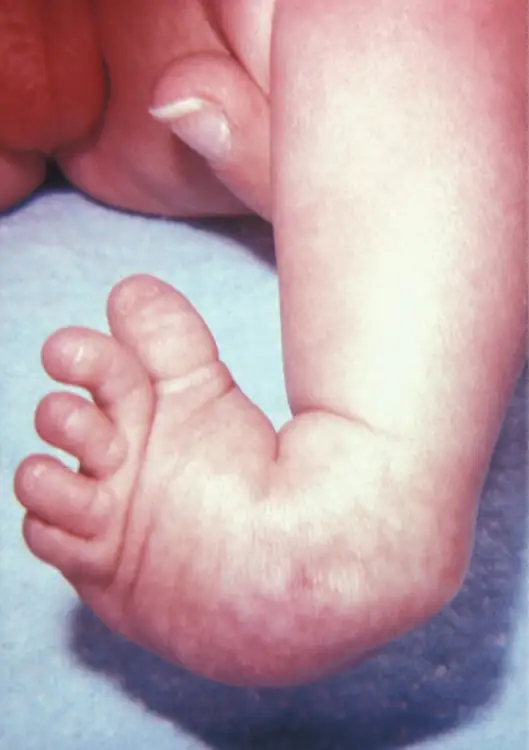
At birth, children with a clubfoot have the heel turned inward and the anterior foot twisted so that the lateral side of the foot is facing inferiorly, commonly due to ligaments or leg muscles attached to the foot that are shortened or abnormally tight. These pull the foot into an abnormal position, resulting in bone deformities. Other symptoms may include bending of the ankle that lifts the heel of the foot and an extremely high foot arch. Due to the limited range of motion in the affected foot, it is difficult to place the foot into the correct position. Additionally, the affected foot may be shorter than normal, and the calf muscles are usually underdeveloped on the affected side. Despite the appearance, this is not a painful condition for newborns. However, it must be treated early to avoid future pain and impaired walking ability.
Although the cause of clubfoot is idiopathic (unknown), evidence indicates that fetal position within the uterus is not a contributing factor. Genetic factors are involved, because clubfoot tends to run within families. Cigarette smoking during pregnancy has been linked to the development of clubfoot, particularly in families with a history of clubfoot.
Previously, clubfoot required extensive surgery. Today, 90 percent of cases are successfully treated without surgery using new corrective casting techniques. The best chance for a full recovery requires that clubfoot treatment begin during the first 2 weeks after birth. Corrective casting gently stretches the foot, which is followed by the application of a holding cast to keep the foot in the proper position. This stretching and casting is repeated weekly for several weeks. In severe cases, surgery may also be required, after which the foot typically remains in a cast for 6 to 8 weeks. After the cast is removed following either surgical or nonsurgical treatment, the child will be required to wear a brace part-time (at night) for up to 4 years. In addition, special exercises will be prescribed, and the child must also wear special shoes. Close monitoring by the parents and adherence to postoperative instructions are imperative in minimizing the risk of relapse.
Despite these difficulties, treatment for clubfoot is usually successful, and the child will grow up to lead a normal, active life. Numerous examples of individuals born with a clubfoot who went on to successful careers include Dudley Moore (comedian and actor), Damon Wayans (comedian and actor), Troy Aikman (three-time Super Bowl-winning quarterback), Kristi Yamaguchi (Olympic gold medalist in figure skating), Mia Hamm (two-time Olympic gold medalist in soccer), and Charles Woodson (Heisman trophy and Super Bowl winner).
Chapter Review¶
Key Terms¶
- acetabulum
- large, cup-shaped cavity located on the lateral side of the hip bone; formed by the junction of the ilium, pubis, and ischium portions of the hip bone
- acromial end of the clavicle
- lateral end of the clavicle that articulates with the acromion of the scapula
- acromial process
- acromion of the scapula
- acromioclavicular joint
- articulation between the acromion of the scapula and the acromial end of the clavicle
- acromion
- flattened bony process that extends laterally from the scapular spine to form the bony tip of the shoulder
- adductor tubercle
- small, bony bump located on the superior aspect of the medial epicondyle of the femur
- anatomical neck
- line on the humerus located around the outside margin of the humeral head
- ankle joint
- joint that separates the leg and foot portions of the lower limb; formed by the articulations between the talus bone of the foot inferiorly, and the distal end of the tibia, medial malleolus of the tibia, and lateral malleolus of the fibula superiorly
- anterior border of the tibia
- narrow, anterior margin of the tibia that extends inferiorly from the tibial tuberosity
- anterior inferior iliac spine
- small, bony projection located on the anterior margin of the ilium, below the anterior superior iliac spine
- anterior sacroiliac ligament
- strong ligament between the sacrum and the ilium portions of the hip bone that supports the anterior side of the sacroiliac joint
- anterior superior iliac spine
- rounded, anterior end of the iliac crest
- apical ectodermal ridge
- enlarged ridge of ectoderm at the distal end of a limb bud that stimulates growth and elongation of the limb
- arcuate line of the ilium
- smooth ridge located at the inferior margin of the iliac fossa; forms the lateral portion of the pelvic brim
- arm
- region of the upper limb located between the shoulder and elbow joints; contains the humerus bone
- auricular surface of the ilium
- roughened area located on the posterior, medial side of the ilium of the hip bone; articulates with the auricular surface of the sacrum to form the sacroiliac joint
- base of the metatarsal bone
- expanded, proximal end of each metatarsal bone
- bicipital groove
- intertubercular groove; narrow groove located between the greater and lesser tubercles of the humerus
- calcaneus
- heel bone; posterior, inferior tarsal bone that forms the heel of the foot
- capitate
- from the lateral side, the third of the four distal carpal bones; articulates with the scaphoid and lunate proximally, the trapezoid laterally, the hamate medially, and primarily with the third metacarpal distally
- capitulum
- knob-like bony structure located anteriorly on the lateral, distal end of the humerus
- carpal bone
- one of the eight small bones that form the wrist and base of the hand; these are grouped as a proximal row consisting of (from lateral to medial) the scaphoid, lunate, triquetrum, and pisiform bones, and a distal row containing (from lateral to medial) the trapezium, trapezoid, capitate, and hamate bones
- carpal tunnel
- passageway between the anterior forearm and hand formed by the carpal bones and flexor retinaculum
- carpometacarpal joint
- articulation between one of the carpal bones in the distal row and a metacarpal bone of the hand
- clavicle
- collarbone; elongated bone that articulates with the manubrium of the sternum medially and the acromion of the scapula laterally
- coracoclavicular ligament
- strong band of connective tissue that anchors the coracoid process of the scapula to the lateral clavicle; provides important indirect support for the acromioclavicular joint
- coracoid process
- short, hook-like process that projects anteriorly and laterally from the superior margin of the scapula
- coronoid fossa
- depression on the anterior surface of the humerus above the trochlea; this space receives the coronoid process of the ulna when the elbow is maximally flexed
- coronoid process of the ulna
- projecting bony lip located on the anterior, proximal ulna; forms the inferior margin of the trochlear notch
- costoclavicular ligament
- band of connective tissue that unites the medial clavicle with the first rib
- coxal bone
- hip bone
- cuboid
- tarsal bone that articulates posteriorly with the calcaneus bone, medially with the lateral cuneiform bone, and anteriorly with the fourth and fifth metatarsal bones
- deltoid tuberosity
- roughened, V-shaped region located laterally on the mid-shaft of the humerus
- distal radioulnar joint
- articulation between the head of the ulna and the ulnar notch of the radius
- distal tibiofibular joint
- articulation between the distal fibula and the fibular notch of the tibia
- elbow joint
- joint located between the upper arm and forearm regions of the upper limb; formed by the articulations between the trochlea of the humerus and the trochlear notch of the ulna, and the capitulum of the humerus and the head of the radius
- femur
- thigh bone; the single bone of the thigh
- fibula
- thin, non-weight-bearing bone found on the lateral side of the leg
- fibular notch
- wide groove on the lateral side of the distal tibia for articulation with the fibula at the distal tibiofibular joint
- flexor retinaculum
- strong band of connective tissue at the anterior wrist that spans the top of the U-shaped grouping of the carpal bones to form the roof of the carpal tunnel
- foot
- portion of the lower limb located distal to the ankle joint
- forearm
- region of the upper limb located between the elbow and wrist joints; contains the radius and ulna bones
- fossa
- (plural = fossae) shallow depression on the surface of a bone
- fovea capitis
- minor indentation on the head of the femur that serves as the site of attachment for the ligament to the head of the femur
- glenohumeral joint
- shoulder joint; formed by the articulation between the glenoid cavity of the scapula and the head of the humerus
- glenoid cavity
- (also, glenoid fossa) shallow depression located on the lateral scapula, between the superior and lateral borders
- gluteal tuberosity
- roughened area on the posterior side of the proximal femur, extending inferiorly from the base of the greater trochanter
- greater pelvis
- (also, greater pelvic cavity or false pelvis) broad space above the pelvic brim defined laterally by the fan-like portion of the upper ilium
- greater sciatic foramen
- pelvic opening formed by the greater sciatic notch of the hip bone, the sacrum, and the sacrospinous ligament
- greater sciatic notch
- large, U-shaped indentation located on the posterior margin of the ilium, superior to the ischial spine
- greater trochanter
- large, bony expansion of the femur that projects superiorly from the base of the femoral neck
- greater tubercle
- enlarged prominence located on the lateral side of the proximal humerus
- hallux
- big toe; digit 1 of the foot
- hamate
- from the lateral side, the fourth of the four distal carpal bones; articulates with the lunate and triquetrum proximally, the fourth and fifth metacarpals distally, and the capitate laterally
- hand
- region of the upper limb distal to the wrist joint
- head of the femur
- rounded, proximal end of the femur that articulates with the acetabulum of the hip bone to form the hip joint
- head of the fibula
- small, knob-like, proximal end of the fibula; articulates with the inferior aspect of the lateral condyle of the tibia
- head of the humerus
- smooth, rounded region on the medial side of the proximal humerus; articulates with the glenoid fossa of the scapula to form the glenohumeral (shoulder) joint
- head of the metatarsal bone
- expanded, distal end of each metatarsal bone
- head of the radius
- disc-shaped structure that forms the proximal end of the radius; articulates with the capitulum of the humerus as part of the elbow joint, and with the radial notch of the ulna as part of the proximal radioulnar joint
- head of the ulna
- small, rounded distal end of the ulna; articulates with the ulnar notch of the distal radius, forming the distal radioulnar joint
- hip bone
- coxal bone; single bone that forms the pelvic girdle; consists of three areas, the ilium, ischium, and pubis
- hip joint
- joint located at the proximal end of the lower limb; formed by the articulation between the acetabulum of the hip bone and the head of the femur
- hook of the hamate bone
- bony extension located on the anterior side of the hamate carpal bone
- humerus
- single bone of the upper arm
- iliac crest
- curved, superior margin of the ilium
- iliac fossa
- shallow depression found on the anterior and medial surfaces of the upper ilium
- ilium
- superior portion of the hip bone
- inferior angle of the scapula
- inferior corner of the scapula located where the medial and lateral borders meet
- inferior pubic ramus
- narrow segment of bone that passes inferiorly and laterally from the pubic body; joins with the ischial ramus to form the ischiopubic ramus
- infraglenoid tubercle
- small bump or roughened area located on the lateral border of the scapula, near the inferior margin of the glenoid cavity
- infraspinous fossa
- broad depression located on the posterior scapula, inferior to the spine
- intercondylar eminence
- irregular elevation on the superior end of the tibia, between the articulating surfaces of the medial and lateral condyles
- intercondylar fossa
- deep depression on the posterior side of the distal femur that separates the medial and lateral condyles
- intermediate cuneiform
- middle of the three cuneiform tarsal bones; articulates posteriorly with the navicular bone, medially with the medial cuneiform bone, laterally with the lateral cuneiform bone, and anteriorly with the second metatarsal bone
- interosseous border of the fibula
- small ridge running down the medial side of the fibular shaft; for attachment of the interosseous membrane between the fibula and tibia
- interosseous border of the radius
- narrow ridge located on the medial side of the radial shaft; for attachment of the interosseous membrane between the ulna and radius bones
- interosseous border of the tibia
- small ridge running down the lateral side of the tibial shaft; for attachment of the interosseous membrane between the tibia and fibula
- interosseous border of the ulna
- narrow ridge located on the lateral side of the ulnar shaft; for attachment of the interosseous membrane between the ulna and radius
- interosseous membrane of the forearm
- sheet of dense connective tissue that unites the radius and ulna bones
- interosseous membrane of the leg
- sheet of dense connective tissue that unites the shafts of the tibia and fibula bones
- interphalangeal joint
- articulation between adjacent phalanx bones of the hand or foot digits
- intertrochanteric crest
- short, prominent ridge running between the greater and lesser trochanters on the posterior side of the proximal femur
- intertrochanteric line
- small ridge running between the greater and lesser trochanters on the anterior side of the proximal femur
- intertubercular groove (sulcus)
- bicipital groove; narrow groove located between the greater and lesser tubercles of the humerus
- ischial ramus
- bony extension projecting anteriorly and superiorly from the ischial tuberosity; joins with the inferior pubic ramus to form the ischiopubic ramus
- ischial spine
- pointed, bony projection from the posterior margin of the ischium that separates the greater sciatic notch and lesser sciatic notch
- ischial tuberosity
- large, roughened protuberance that forms the posteroinferior portion of the hip bone; weight-bearing region of the pelvis when sitting
- ischiopubic ramus
- narrow extension of bone that connects the ischial tuberosity to the pubic body; formed by the junction of the ischial ramus and inferior pubic ramus
- ischium
- posteroinferior portion of the hip bone
- knee joint
- joint that separates the thigh and leg portions of the lower limb; formed by the articulations between the medial and lateral condyles of the femur, and the medial and lateral condyles of the tibia
- lateral border of the scapula
- diagonally oriented lateral margin of the scapula
- lateral condyle of the femur
- smooth, articulating surface that forms the distal and posterior sides of the lateral expansion of the distal femur
- lateral condyle of the tibia
- lateral, expanded region of the proximal tibia that includes the smooth surface that articulates with the lateral condyle of the femur as part of the knee joint
- lateral cuneiform
- most lateral of the three cuneiform tarsal bones; articulates posteriorly with the navicular bone, medially with the intermediate cuneiform bone, laterally with the cuboid bone, and anteriorly with the third metatarsal bone
- lateral epicondyle of the femur
- roughened area of the femur located on the lateral side of the lateral condyle
- lateral epicondyle of the humerus
- small projection located on the lateral side of the distal humerus
- lateral malleolus
- expanded distal end of the fibula
- lateral supracondylar ridge
- narrow, bony ridge located along the lateral side of the distal humerus, superior to the lateral epicondyle
- leg
- portion of the lower limb located between the knee and ankle joints
- lesser pelvis
- (also, lesser pelvic cavity or true pelvis) narrow space located within the pelvis, defined superiorly by the pelvic brim (pelvic inlet) and inferiorly by the pelvic outlet
- lesser sciatic foramen
- pelvic opening formed by the lesser sciatic notch of the hip bone, the sacrospinous ligament, and the sacrotuberous ligament
- lesser sciatic notch
- shallow indentation along the posterior margin of the ischium, inferior to the ischial spine
- lesser trochanter
- small, bony projection on the medial side of the proximal femur, at the base of the femoral neck
- lesser tubercle
- small, bony prominence located on anterior side of the proximal humerus
- ligament of the head of the femur
- ligament that spans the acetabulum of the hip bone and the fovea capitis of the femoral head
- limb bud
- small elevation that appears on the lateral side of the embryo during the fourth or fifth week of development, which gives rise to an upper or lower limb
- linea aspera
- longitudinally running bony ridge located in the middle third of the posterior femur
- lunate
- from the lateral side, the second of the four proximal carpal bones; articulates with the radius proximally, the capitate and hamate distally, the scaphoid laterally, and the triquetrum medially
- medial border of the scapula
- elongated, medial margin of the scapula
- medial condyle of the femur
- smooth, articulating surface that forms the distal and posterior sides of the medial expansion of the distal femur
- medial condyle of the tibia
- medial, expanded region of the proximal tibia that includes the smooth surface that articulates with the medial condyle of the femur as part of the knee joint
- medial cuneiform
- most medial of the three cuneiform tarsal bones; articulates posteriorly with the navicular bone, laterally with the intermediate cuneiform bone, and anteriorly with the first and second metatarsal bones
- medial epicondyle of the femur
- roughened area of the distal femur located on the medial side of the medial condyle
- medial epicondyle of the humerus
- enlarged projection located on the medial side of the distal humerus
- medial malleolus
- bony expansion located on the medial side of the distal tibia
- metacarpal bone
- one of the five long bones that form the palm of the hand; numbered 1–5, starting on the lateral (thumb) side of the hand
- metacarpophalangeal joint
- articulation between the distal end of a metacarpal bone of the hand and a proximal phalanx bone of the thumb or a finger
- metatarsal bone
- one of the five elongated bones that forms the anterior half of the foot; numbered 1–5, starting on the medial side of the foot
- metatarsophalangeal joint
- articulation between a metatarsal bone of the foot and the proximal phalanx bone of a toe
- midcarpal joint
- articulation between the proximal and distal rows of the carpal bones; contributes to movements of the hand at the wrist
- navicular
- tarsal bone that articulates posteriorly with the talus bone, laterally with the cuboid bone, and anteriorly with the medial, intermediate, and lateral cuneiform bones
- neck of the femur
- narrowed region located inferior to the head of the femur
- neck of the radius
- narrowed region immediately distal to the head of the radius
- obturator foramen
- large opening located in the anterior hip bone, between the pubis and ischium regions
- olecranon fossa
- large depression located on the posterior side of the distal humerus; this space receives the olecranon process of the ulna when the elbow is fully extended
- olecranon process
- expanded posterior and superior portions of the proximal ulna; forms the bony tip of the elbow
- patella
- kneecap; the largest sesamoid bone of the body; articulates with the distal femur
- patellar surface
- smooth groove located on the anterior side of the distal femur, between the medial and lateral condyles; site of articulation for the patella
- pectineal line
- narrow ridge located on the superior surface of the superior pubic ramus
- pectoral girdle
- shoulder girdle; the set of bones, consisting of the scapula and clavicle, which attaches each upper limb to the axial skeleton
- pelvic brim
- pelvic inlet; the dividing line between the greater and lesser pelvic regions; formed by the superior margin of the pubic symphysis, the pectineal lines of each pubis, the arcuate lines of each ilium, and the sacral promontory
- pelvic girdle
- hip girdle; consists of a single hip bone, which attaches a lower limb to the sacrum of the axial skeleton
- pelvic inlet
- pelvic brim
- pelvic outlet
- inferior opening of the lesser pelvis; formed by the inferior margin of the pubic symphysis, right and left ischiopubic rami and sacrotuberous ligaments, and the tip of the coccyx
- pelvis
- ring of bone consisting of the right and left hip bones, the sacrum, and the coccyx
- phalanx bone of the foot
- (plural = phalanges) one of the 14 bones that form the toes; these include the proximal and distal phalanges of the big toe, and the proximal, middle, and distal phalanx bones of toes two through five
- phalanx bone of the hand
- (plural = phalanges) one of the 14 bones that form the thumb and fingers; these include the proximal and distal phalanges of the thumb, and the proximal, middle, and distal phalanx bones of the fingers two through five
- pisiform
- from the lateral side, the fourth of the four proximal carpal bones; articulates with the anterior surface of the triquetrum
- pollex
- (also, thumb) digit 1 of the hand
- posterior inferior iliac spine
- small, bony projection located at the inferior margin of the auricular surface on the posterior ilium
- posterior sacroiliac ligament
- strong ligament spanning the sacrum and ilium of the hip bone that supports the posterior side of the sacroiliac joint
- posterior superior iliac spine
- rounded, posterior end of the iliac crest
- proximal radioulnar joint
- articulation formed by the radial notch of the ulna and the head of the radius
- proximal tibiofibular joint
- articulation between the head of the fibula and the inferior aspect of the lateral condyle of the tibia
- pubic arch
- bony structure formed by the pubic symphysis, and the bodies and inferior pubic rami of the right and left pubic bones
- pubic body
- enlarged, medial portion of the pubis region of the hip bone
- pubic symphysis
- joint formed by the articulation between the pubic bodies of the right and left hip bones
- pubic tubercle
- small bump located on the superior aspect of the pubic body
- pubis
- anterior portion of the hip bone
- radial fossa
- small depression located on the anterior humerus above the capitulum; this space receives the head of the radius when the elbow is maximally flexed
- radial notch of the ulna
- small, smooth area on the lateral side of the proximal ulna; articulates with the head of the radius as part of the proximal radioulnar joint
- radial tuberosity
- oval-shaped, roughened protuberance located on the medial side of the proximal radius
- radiocarpal joint
- wrist joint, located between the forearm and hand regions of the upper limb; articulation formed proximally by the distal end of the radius and the fibrocartilaginous pad that unites the distal radius and ulna bone, and distally by the scaphoid, lunate, and triquetrum carpal bones
- radius
- bone located on the lateral side of the forearm
- sacroiliac joint
- joint formed by the articulation between the auricular surfaces of the sacrum and ilium
- sacrospinous ligament
- ligament that spans the sacrum to the ischial spine of the hip bone
- sacrotuberous ligament
- ligament that spans the sacrum to the ischial tuberosity of the hip bone
- scaphoid
- from the lateral side, the first of the four proximal carpal bones; articulates with the radius proximally, the trapezoid, trapezium, and capitate distally, and the lunate medially
- scapula
- shoulder blade bone located on the posterior side of the shoulder
- shaft of the femur
- cylindrically shaped region that forms the central portion of the femur
- shaft of the fibula
- elongated, slender portion located between the expanded ends of the fibula
- shaft of the humerus
- narrow, elongated, central region of the humerus
- shaft of the radius
- narrow, elongated, central region of the radius
- shaft of the tibia
- triangular-shaped, central portion of the tibia
- shaft of the ulna
- narrow, elongated, central region of the ulna
- soleal line
- small, diagonally running ridge located on the posterior side of the proximal tibia
- spine of the scapula
- prominent ridge passing mediolaterally across the upper portion of the posterior scapular surface
- sternal end of the clavicle
- medial end of the clavicle that articulates with the manubrium of the sternum
- sternoclavicular joint
- articulation between the manubrium of the sternum and the sternal end of the clavicle; forms the only bony attachment between the pectoral girdle of the upper limb and the axial skeleton
- styloid process of the radius
- pointed projection located on the lateral end of the distal radius
- styloid process of the ulna
- short, bony projection located on the medial end of the distal ulna
- subpubic angle
- inverted V-shape formed by the convergence of the right and left ischiopubic rami; this angle is greater than 80 degrees in females and less than 70 degrees in males
- subscapular fossa
- broad depression located on the anterior (deep) surface of the scapula
- superior angle of the scapula
- corner of the scapula between the superior and medial borders of the scapula
- superior border of the scapula
- superior margin of the scapula
- superior pubic ramus
- narrow segment of bone that passes laterally from the pubic body to join the ilium
- supraglenoid tubercle
- small bump located at the superior margin of the glenoid cavity
- suprascapular notch
- small notch located along the superior border of the scapula, medial to the coracoid process
- supraspinous fossa
- narrow depression located on the posterior scapula, superior to the spine
- surgical neck
- region of the humerus where the expanded, proximal end joins with the narrower shaft
- sustentaculum tali
- bony ledge extending from the medial side of the calcaneus bone
- talus
- tarsal bone that articulates superiorly with the tibia and fibula at the ankle joint; also articulates inferiorly with the calcaneus bone and anteriorly with the navicular bone
- tarsal bone
- one of the seven bones that make up the posterior foot; includes the calcaneus, talus, navicular, cuboid, medial cuneiform, intermediate cuneiform, and lateral cuneiform bones
- thigh
- portion of the lower limb located between the hip and knee joints
- tibia
- shin bone; the large, weight-bearing bone located on the medial side of the leg
- tibial tuberosity
- elevated area on the anterior surface of the proximal tibia
- trapezium
- from the lateral side, the first of the four distal carpal bones; articulates with the scaphoid proximally, the first and second metacarpals distally, and the trapezoid medially
- trapezoid
- from the lateral side, the second of the four distal carpal bones; articulates with the scaphoid proximally, the second metacarpal distally, the trapezium laterally, and the capitate medially
- triquetrum
- from the lateral side, the third of the four proximal carpal bones; articulates with the lunate laterally, the hamate distally, and has a facet for the pisiform
- trochlea
- pulley-shaped region located medially at the distal end of the humerus; articulates at the elbow with the trochlear notch of the ulna
- trochlear notch
- large, C-shaped depression located on the anterior side of the proximal ulna; articulates at the elbow with the trochlea of the humerus
- ulna
- bone located on the medial side of the forearm
- ulnar notch of the radius
- shallow, smooth area located on the medial side of the distal radius; articulates with the head of the ulna at the distal radioulnar joint
- ulnar tuberosity
- roughened area located on the anterior, proximal ulna inferior to the coronoid process
Chapter Review¶
8.1 The Pectoral Girdle¶
The pectoral girdle, consisting of the clavicle and the scapula, attaches each upper limb to the axial skeleton. The clavicle is an anterior bone whose sternal end articulates with the manubrium of the sternum at the sternoclavicular joint. The sternal end is also anchored to the first rib by the costoclavicular ligament. The acromial end of the clavicle articulates with the acromion of the scapula at the acromioclavicular joint. This end is also anchored to the coracoid process of the scapula by the coracoclavicular ligament, which provides indirect support for the acromioclavicular joint. The clavicle supports the scapula, transmits the weight and forces from the upper limb to the body trunk, and protects the underlying nerves and blood vessels.
The scapula lies on the posterior aspect of the pectoral girdle. It mediates the attachment of the upper limb to the clavicle, and contributes to the formation of the glenohumeral (shoulder) joint. This triangular bone has three sides called the medial, lateral, and superior borders. The suprascapular notch is located on the superior border. The scapula also has three corners, two of which are the superior and inferior angles. The third corner is occupied by the glenoid cavity. Posteriorly, the spine separates the supraspinous and infraspinous fossae, and then extends laterally as the acromion. The subscapular fossa is located on the anterior surface of the scapula. The coracoid process projects anteriorly, passing inferior to the lateral end of the clavicle.
8.2 Bones of the Upper Limb¶
Each upper limb is divided into three regions and contains a total of 30 bones. The upper arm is the region located between the shoulder and elbow joints. This area contains the humerus. The proximal humerus consists of the head, which articulates with the scapula at the glenohumeral joint, the greater and lesser tubercles separated by the intertubercular (bicipital) groove, and the anatomical and surgical necks. The humeral shaft has the roughened area of the deltoid tuberosity on its lateral side. The distal humerus is flattened, forming a lateral supracondylar ridge that terminates at the small lateral epicondyle. The medial side of the distal humerus has the large, medial epicondyle. The articulating surfaces of the distal humerus consist of the trochlea medially and the capitulum laterally. Depressions on the humerus that accommodate the forearm bones during bending (flexing) and straightening (extending) of the elbow include the coronoid fossa, the radial fossa, and the olecranon fossa.
The forearm is the region of the upper limb located between the elbow and wrist joints. This region contains two bones, the ulna medially and the radius on the lateral (thumb) side. The elbow joint is formed by the articulation between the trochlea of the humerus and the trochlear notch of the ulna, plus the articulation between the capitulum of the humerus and the head of the radius. The proximal radioulnar joint is the articulation between the head of the radius and the radial notch of the ulna. The proximal ulna also has the olecranon process, forming an expanded posterior region, and the coronoid process and ulnar tuberosity on its anterior aspect. On the proximal radius, the narrowed region below the head is the neck; distal to this is the radial tuberosity. The shaft portions of both the ulna and radius have an interosseous border, whereas the distal ends of each bone have a pointed styloid process. The distal radioulnar joint is found between the head of the ulna and the ulnar notch of the radius. The distal end of the radius articulates with the proximal carpal bones, but the ulna does not.
The base of the hand is formed by eight carpal bones. The carpal bones are united into two rows of bones. The proximal row contains (from lateral to medial) the scaphoid, lunate, triquetrum, and pisiform bones. The scaphoid, lunate, and triquetrum bones contribute to the formation of the radiocarpal joint. The distal row of carpal bones contains (from medial to lateral) the hamate, capitate, trapezoid, and trapezium bones (“So Long To Pinky, Here Comes The Thumb”). The anterior hamate has a prominent bony hook. The proximal and distal carpal rows articulate with each other at the midcarpal joint. The carpal bones, together with the flexor retinaculum, also form the carpal tunnel of the wrist.
The five metacarpal bones form the palm of the hand. The metacarpal bones are numbered 1–5, starting with the thumb side. The first metacarpal bone is freely mobile, but the other bones are united as a group. The digits are also numbered 1–5, with the thumb being number 1. The fingers and thumb contain a total of 14 phalanges (phalanx bones). The thumb contains a proximal and a distal phalanx, whereas the remaining digits each contain proximal, middle, and distal phalanges.
8.3 The Pelvic Girdle and Pelvis¶
The pelvic girdle, consisting of a hip bone, serves to attach a lower limb to the axial skeleton. The hip bone articulates posteriorly at the sacroiliac joint with the sacrum, which is part of the axial skeleton. The right and left hip bones converge anteriorly and articulate with each other at the pubic symphysis. The combination of the hip bone, the sacrum, and the coccyx forms the pelvis. The pelvis has a pronounced anterior tilt. The primary function of the pelvis is to support the upper body and transfer body weight to the lower limbs. It also serves as the site of attachment for multiple muscles.
The hip bone consists of three regions: the ilium, ischium, and pubis. The ilium forms the large, fan-like region of the hip bone. The superior margin of this area is the iliac crest. Located at either end of the iliac crest are the anterior superior and posterior superior iliac spines. Inferior to these are the anterior inferior and posterior inferior iliac spines. The auricular surface of the ilium articulates with the sacrum to form the sacroiliac joint. The medial surface of the upper ilium forms the iliac fossa, with the arcuate line marking the inferior limit of this area. The posterior margin of the ilium has the large greater sciatic notch.
The posterolateral portion of the hip bone is the ischium. It has the expanded ischial tuberosity, which supports body weight when sitting. The ischial ramus projects anteriorly and superiorly. The posterior margin of the ischium has the shallow lesser sciatic notch and the ischial spine, which separates the greater and lesser sciatic notches.
The pubis forms the anterior portion of the hip bone. The body of the pubis articulates with the pubis of the opposite hip bone at the pubic symphysis. The superior margin of the pubic body has the pubic tubercle. The pubis is joined to the ilium by the superior pubic ramus, the superior surface of which forms the pectineal line. The inferior pubic ramus projects inferiorly and laterally. The pubic arch is formed by the pubic symphysis, the bodies of the adjacent pubic bones, and the two inferior pubic rami. The inferior pubic ramus joins the ischial ramus to form the ischiopubic ramus. The subpubic angle is formed by the medial convergence of the right and left ischiopubic rami.
The lateral side of the hip bone has the cup-like acetabulum, which is part of the hip joint. The large anterior opening is the obturator foramen. The sacroiliac joint is supported by the anterior and posterior sacroiliac ligaments. The sacrum is also joined to the hip bone by the sacrospinous ligament, which attaches to the ischial spine, and the sacrotuberous ligament, which attaches to the ischial tuberosity. The sacrospinous and sacrotuberous ligaments contribute to the formation of the greater and lesser sciatic foramina.
The broad space of the upper pelvis is the greater pelvis, and the narrow, inferior space is the lesser pelvis. These areas are separated by the pelvic brim (pelvic inlet). The inferior opening of the pelvis is the pelvic outlet. Compared to the male, the female pelvis is wider to accommodate childbirth, has a larger subpubic angle, and a broader greater sciatic notch.
8.4 Bones of the Lower Limb¶
The lower limb is divided into three regions. These are the thigh, located between the hip and knee joints; the leg, located between the knee and ankle joints; and distal to the ankle, the foot. There are 30 bones in each lower limb. These are the femur, patella, tibia, fibula, seven tarsal bones, five metatarsal bones, and 14 phalanges.
The femur is the single bone of the thigh. Its rounded head articulates with the acetabulum of the hip bone to form the hip joint. The head has the fovea capitis for attachment of the ligament of the head of the femur. The narrow neck joins inferiorly with the greater and lesser trochanters. Passing between these bony expansions are the intertrochanteric line on the anterior femur and the larger intertrochanteric crest on the posterior femur. On the posterior shaft of the femur is the gluteal tuberosity proximally and the linea aspera in the mid-shaft region. The expanded distal end consists of three articulating surfaces: the medial and lateral condyles, and the patellar surface. The outside margins of the condyles are the medial and lateral epicondyles. The adductor tubercle is on the superior aspect of the medial epicondyle.
The patella is a sesamoid bone located within a muscle tendon. It articulates with the patellar surface on the anterior side of the distal femur, thereby protecting the muscle tendon from rubbing against the femur.
The leg contains the large tibia on the medial side and the slender fibula on the lateral side. The tibia bears the weight of the body, whereas the fibula does not bear weight. The interosseous border of each bone is the attachment site for the interosseous membrane of the leg, the connective tissue sheet that unites the tibia and fibula.
The proximal tibia consists of the expanded medial and lateral condyles, which articulate with the medial and lateral condyles of the femur to form the knee joint. Between the tibial condyles is the intercondylar eminence. On the anterior side of the proximal tibia is the tibial tuberosity, which is continuous inferiorly with the anterior border of the tibia. On the posterior side, the proximal tibia has the curved soleal line. The bony expansion on the medial side of the distal tibia is the medial malleolus. The groove on the lateral side of the distal tibia is the fibular notch.
The head of the fibula forms the proximal end and articulates with the underside of the lateral condyle of the tibia. The distal fibula articulates with the fibular notch of the tibia. The expanded distal end of the fibula is the lateral malleolus.
The posterior foot is formed by the seven tarsal bones. The talus articulates superiorly with the distal tibia, the medial malleolus of the tibia, and the lateral malleolus of the fibula to form the ankle joint. The talus articulates inferiorly with the calcaneus bone. The sustentaculum tali of the calcaneus helps to support the talus. Anterior to the talus is the navicular bone, and anterior to this are the medial, intermediate, and lateral cuneiform bones. The cuboid bone is anterior to the calcaneus.
The five metatarsal bones form the anterior foot. The base of these bones articulate with the cuboid or cuneiform bones. The metatarsal heads, at their distal ends, articulate with the proximal phalanges of the toes. The big toe (toe number 1) has proximal and distal phalanx bones. The remaining toes have proximal, middle, and distal phalanges.
8.5 Development of the Appendicular Skeleton¶
The bones of the appendicular skeleton arise from embryonic mesenchyme. Limb buds appear at the end of the fourth week. The apical ectodermal ridge, located at the end of the limb bud, stimulates growth and elongation of the limb. During the sixth week, the distal end of the limb bud becomes paddle-shaped, and selective cell death separates the developing fingers and toes. At the same time, mesenchyme within the limb bud begins to differentiate into hyaline cartilage, forming models for future bones. During the seventh week, the upper limbs rotate laterally and the lower limbs rotate medially, bringing the limbs into their final positions.
Endochondral ossification, the process that converts the hyaline cartilage model into bone, begins in most appendicular bones by the twelfth fetal week. This begins as a primary ossification center in the diaphysis, followed by the later appearance of one or more secondary ossifications centers in the regions of the epiphyses. Each secondary ossification center is separated from the primary ossification center by an epiphyseal plate. Continued growth of the epiphyseal plate cartilage provides for bone lengthening. Disappearance of the epiphyseal plate is followed by fusion of the bony components to form a single, adult bone.
The clavicle develops via intramembranous ossification, in which mesenchyme is converted directly into bone tissue. Ossification within the clavicle begins during the fifth week of development and continues until 25 years of age.
Review Questions¶
8.1 The Pectoral Girdle¶
1. Which part of the clavicle articulates with the manubrium?
- shaft
- sternal end
- acromial end
- coracoid process
Answer
B
2. A shoulder separation results from injury to the ________.
- glenohumeral joint
- costoclavicular joint
- acromioclavicular joint
- sternoclavicular joint
Answer
C
3. Which feature lies between the spine and superior border of the scapula?
- suprascapular notch
- glenoid cavity
- superior angle
- supraspinous fossa
Answer
D
4. What structure is an extension of the spine of the scapula?
- acromion
- coracoid process
- supraglenoid tubercle
- glenoid cavity
Answer
A
5. Name the short, hook-like bony process of the scapula that projects anteriorly.
- acromial process
- clavicle
- coracoid process
- glenoid fossa
Answer
C
8.2 Bones of the Upper Limb¶
6. How many bones are there in the upper limbs combined?
- 20
- 30
- 40
- 60
Answer
D
7. Which bony landmark is located on the lateral side of the proximal humerus?
- greater tubercle
- trochlea
- lateral epicondyle
- lesser tubercle
Answer
A
8. Which region of the humerus articulates with the radius as part of the elbow joint?
- trochlea
- styloid process
- capitulum
- olecranon process
Answer
C
9. Which is the lateral-most carpal bone of the proximal row?
- trapezium
- hamate
- pisiform
- scaphoid
Answer
D
10. The radius bone ________.
- is found on the medial side of the forearm
- has a head that articulates with the radial notch of the ulna
- does not articulate with any of the carpal bones
- has the radial tuberosity located near its distal end
Answer
B
8.3 The Pelvic Girdle and Pelvis¶
11. How many bones fuse in adulthood to form the hip bone?
- 2
- 3
- 4
- 5
Answer
B
12. Which component forms the superior part of the hip bone?
- ilium
- pubis
- ischium
- sacrum
Answer
A
13. Which of the following supports body weight when sitting?
- iliac crest
- ischial tuberosity
- ischiopubic ramus
- pubic body
Answer
B
14. The ischial spine is found between which of the following structures?
- inferior pubic ramus and ischial ramus
- pectineal line and arcuate line
- lesser sciatic notch and greater sciatic notch
- anterior superior iliac spine and posterior superior iliac spine
Answer
C
15. The pelvis ________.
- has a subpubic angle that is larger in females
- consists of the two hip bones, but does not include the sacrum or coccyx
- has an obturator foramen, an opening that is defined in part by the sacrospinous and sacrotuberous ligaments
- has a space located inferior to the pelvic brim called the greater pelvis
Answer
A
8.4 Bones of the Lower Limb¶
16. Which bony landmark of the femur serves as a site for muscle attachments?
- fovea capitis
- lesser trochanter
- head
- medial condyle
Answer
B
17. What structure contributes to the knee joint?
- lateral malleolus of the fibula
- tibial tuberosity
- medial condyle of the tibia
- lateral epicondyle of the femur
Answer
C
18. Which tarsal bone articulates with the tibia and fibula?
- calcaneus
- cuboid
- navicular
- talus
Answer
D
19. What is the total number of bones found in the foot and toes?
- 7
- 14
- 26
- 30
Answer
C
20. The tibia ________.
- has an expanded distal end called the lateral malleolus
- is not a weight-bearing bone
- is firmly anchored to the fibula by an interosseous membrane
- can be palpated (felt) under the skin only at its proximal and distal ends
Answer
C
8.5 Development of the Appendicular Skeleton¶
21. Which event takes place during the seventh week of development?
- appearance of the upper and lower limb buds
- flattening of the distal limb bud into a paddle shape
- the first appearance of hyaline cartilage models of future bones
- the rotation of the limbs
Answer
D
22. During endochondral ossification of a long bone, ________.
- a primary ossification center will develop within the epiphysis
- mesenchyme will differentiate directly into bone tissue
- growth of the epiphyseal plate will produce bone lengthening
- all epiphyseal plates will disappear before birth
Answer
C
23. The clavicle ________.
- develops via intramembranous ossification
- develops via endochondral ossification
- is the last bone of the body to begin ossification
- is fully ossified at the time of birth
Answer
A
Critical Thinking Questions¶
8.1 The Pectoral Girdle¶
24. Describe the shape and palpable line formed by the clavicle and scapula.
Answer
The clavicle extends laterally across the anterior shoulder and can be palpated along its entire length. At its lateral end, the clavicle articulates with the acromion of the scapula, which forms the bony tip of the shoulder. The acromion is continuous with the spine of the scapula, which can be palpated medially and posteriorly along its length. Together, the clavicle, acromion, and spine of the scapula form a V-shaped line that serves as an important area for muscle attachment.
25. Discuss two possible injuries of the pectoral girdle that may occur following a strong blow to the shoulder or a hard fall onto an outstretched hand.
Answer
A blow to the shoulder or falling onto an outstretched hand passes strong forces through the scapula to the clavicle and sternum. A hard fall may thus cause a fracture of the clavicle (broken collarbone) or may injure the ligaments of the acromioclavicular joint. In a severe case, the coracoclavicular ligament may also rupture, resulting in complete dislocation of the acromioclavicular joint (a “shoulder separation”).
8.2 Bones of the Upper Limb¶
26. Your friend runs out of gas and you have to help push their car. Discuss the sequence of bones and joints that convey the forces passing from your hand, through your upper limb and your pectoral girdle, and to your axial skeleton.
Answer
As you push against the car, forces will pass from the metacarpal bones of your hand into the carpal bones at the base of your hand. Forces will then pass through the midcarpal and radiocarpal joints into the radius and ulna bones of the forearm. These will pass the force through the elbow joint into the humerus of the arm, and then through the glenohumeral joint into the scapula. The force will travel through the acromioclavicular joint into the clavicle, and then through the sternoclavicular joint into the sternum, which is part of the axial skeleton.
27. Name the bones in the wrist and hand, and describe or sketch out their locations and articulations.
Answer
The base of the hand is formed by the eight carpal bones arranged in two rows (distal and proximal) of four bones each. The proximal row contains (from lateral to medial) the scaphoid, lunate, triquetrum, and pisiform bones. The distal row contains (from medial to lateral) the hamate, capitate, trapezoid, and trapezium bones. (Use the mnemonic “So Long To Pinky, Here Comes The Thumb” to remember this sequence). The rows of the proximal and distal carpal bones articulate with each other at the midcarpal joint. The palm of the hand contains the five metacarpal bones, which are numbered 1–5 starting on the thumb side. The proximal ends of the metacarpal bones articulate with the distal row of the carpal bones. The distal ends of the metacarpal bones articulate with the proximal phalanx bones of the thumb and fingers. The thumb (digit 1) has both a proximal and distal phalanx bone. The fingers (digits 2–5) all contain proximal, middle, and distal phalanges.
8.3 The Pelvic Girdle and Pelvis¶
28. Describe the articulations and ligaments that unite the four bones of the pelvis to each other.
Answer
The pelvis is formed by the combination of the right and left hip bones, the sacrum, and the coccyx. The auricular surfaces of each hip bone articulate with the auricular surface of the sacrum to form the sacroiliac joint. This joint is supported on either side by the strong anterior and posterior sacroiliac ligaments. The right and left hip bones converge anteriorly, where the pubic bodies articulate with each other to form the pubic symphysis joint. The sacrum is also attached to the hip bone by the sacrospinous ligament, which spans the sacrum to the ischial spine, and the sacrotuberous ligament, which runs from the sacrum to the ischial tuberosity. The coccyx is attached to the inferior end of the sacrum.
29. Discuss the ways in which the female pelvis is adapted for childbirth.
Answer
Compared to the male, the female pelvis is wider to accommodate childbirth. Thus, the female pelvis has greater distances between the anterior superior iliac spines and between the ischial tuberosities. The greater width of the female pelvis results in a larger subpubic angle. This angle, formed by the anterior convergence of the right and left ischiopubic rami, is larger in females (greater than 80 degrees) than in males (less than 70 degrees). The female sacral promontory does not project anteriorly as far as it does in males, which gives the pelvic brim (pelvic inlet) of the female a rounded or oval shape. The lesser pelvic cavity is wider and more shallow in females, and the pelvic outlet is larger than in males. Thus, the greater width of the female pelvis, with its larger pelvic inlet, lesser pelvis, and pelvic outlet, are important for childbirth because the baby must pass through the pelvis during delivery.
8.4 Bones of the Lower Limb¶
30. Define the regions of the lower limb, name the bones found in each region, and describe the bony landmarks that articulate together to form the hip, knee, and ankle joints.
Answer
The lower limb is divided into three regions. The thigh is the region located between the hip and knee joints. It contains the femur and the patella. The hip joint is formed by the articulation between the acetabulum of the hip bone and the head of the femur. The leg is the region between the knee and ankle joints, and contains the tibia (medially) and the fibula (laterally). The knee joint is formed by the articulations between the medial and lateral condyles of the femur, and the medial and lateral condyles of the tibia. Also associated with the knee is the patella, which articulates with the patellar surface of the distal femur. The foot is found distal to the ankle and contains 26 bones. The ankle joint is formed by the articulations between the talus bone of the foot and the distal end of the tibia, the medial malleolus of the tibia, and the lateral malleolus of the fibula. The posterior foot contains the seven tarsal bones, which are the talus, calcaneus, navicular, cuboid, and the medial, intermediate, and lateral cuneiform bones. The anterior foot consists of the five metatarsal bones, which are numbered 1–5 starting on the medial side of the foot. The toes contain 14 phalanx bones, with the big toe (toe number 1) having a proximal and a distal phalanx, and the other toes having proximal, middle, and distal phalanges.
31. The talus bone of the foot receives the weight of the body from the tibia. The talus bone then distributes this weight toward the ground in two directions: one-half of the body weight is passed in a posterior direction and one-half of the weight is passed in an anterior direction. Describe the arrangement of the tarsal and metatarsal bones that are involved in both the posterior and anterior distribution of body weight.
Answer
The talus bone articulates superiorly with the tibia and fibula at the ankle joint, with body weight passed from the tibia to the talus. Body weight from the talus is transmitted to the ground by both ends of the medial and lateral longitudinal foot arches. Weight is passed posteriorly through both arches to the calcaneus bone, which forms the heel of the foot and is in contact with the ground. On the medial side of the foot, body weight is passed anteriorly from the talus bone to the navicular bone, and then to the medial, intermediate, and lateral cuneiform bones. The cuneiform bones pass the weight anteriorly to the first, second, and third metatarsal bones, whose heads (distal ends) are in contact with the ground. On the lateral side, body weight is passed anteriorly from the talus through the calcaneus, cuboid, and fourth and fifth metatarsal bones. The talus bone thus transmits body weight posteriorly to the calcaneus and anteriorly through the navicular, cuneiform, and cuboid bones, and metatarsals one through five.
8.5 Development of the Appendicular Skeleton¶
32. How can a radiograph of a child’s femur be used to determine the approximate age of that child?
Answer
A radiograph (X-ray image) of a child’s femur will show the epiphyseal plates associated with each secondary ossification center. These plates of hyaline cartilage will appear dark in comparison to the white imaging of the ossified bone. Since each epiphyseal plate appears and disappears at a different age, the presence or absence of these plates can be used to give an approximate age for the child. For example, the epiphyseal plate located at the base of the lesser trochanter of the femur appears at age 9–10 years and disappears at puberty (approximately 11 years of age). Thus, a child’s radiograph that shows the presence of the lesser trochanter epiphyseal plate indicates an approximate age of 10 years.
33. How does the development of the clavicle differ from the development of other appendicular skeleton bones?
Answer
Unlike other bones of the appendicular skeleton, the clavicle develops by the process of intramembranous ossification. In this process, embryonic mesenchyme accumulates at the site of the future bone and then differentiates directly into bone-producing tissue. Because of this direct and early production of bone, the clavicle is the first bone of the skeleton to begin to ossify. However, the growth and enlargement of the clavicle continues throughout childhood and adolescence, and thus, it is not fully ossified until 25 years of age.
Interactive Link Questions¶
8.2 Bones of the Upper Limb¶
34. Watch this video to see how fractures of the distal radius bone can affect the wrist joint. Explain the problems that may occur if a fracture of the distal radius involves the joint surface of the radiocarpal joint of the wrist.
Answer
A fracture through the joint surface of the distal radius may make the articulating surface of the radius rough or jagged. This can then cause painful movements involving this joint and the early development of arthritis. Surgery can return the joint surface to its original smoothness, thus allowing for the return of normal function.
35. Visit this site to explore the bones and joints of the hand. What are the three arches of the hand, and what is the importance of these during the gripping of an object?
Answer
The hand has a proximal transverse arch, a distal transverse arch, and a longitudinal arch. These allow the hand to conform to objects being held. These arches maximize the amount of surface contact between the hand and object, which enhances stability and increases sensory input.
36. Watch this video to learn about a Colles fracture, a break of the distal radius, usually caused by falling onto an outstretched hand. When would surgery be required and how would the fracture be repaired in this case?
Answer
Surgery may be required if the fracture is unstable, meaning that the broken ends of the radius won’t stay in place to allow for proper healing. In this case, metal plates and screws can be used to stabilize the fractured bone.
8.3 The Pelvic Girdle and Pelvis¶
37. Watch this video for a 3-D view of the pelvis and its associated ligaments. What is the large opening in the bony pelvis, located between the ischium and pubic regions, and what two parts of the pubis contribute to the formation of this opening?
Answer
The obturator foramen is located between the ischium and the pubis. The superior and inferior pubic rami contribute to the boundaries of the obturator foramen.
8.4 Bones of the Lower Limb¶
38. Watch this video to view how a fracture of the mid-femur is surgically repaired. How are the two portions of the broken femur stabilized during surgical repair of a fractured femur?
Answer
A hole is drilled into the greater trochanter, the bone marrow (medullary) space inside the femur is enlarged, and finally an intramedullary rod is inserted into the femur. This rod is then anchored to the bone with screws.
39. Visit this site to watch a virtual knee replacement surgery. The prosthetic knee components must be properly aligned to function properly. How is this alignment ensured?
Answer
Metal cutting jigs are attached to the bones to ensure that the bones are cut properly prior to the attachment of prosthetic components.
40. Use this tutorial to review the bones of the foot. Which tarsal bones are in the proximal, intermediate, and distal groups?
Answer
The proximal group of tarsal bones includes the calcaneus and talus bones, the navicular bone is intermediate, and the distal group consists of the cuboid bone plus the medial, intermediate, and lateral cuneiform bones.
41. View this link to learn about a bunion, a localized swelling on the medial side of the foot, next to the first metatarsophalangeal joint, at the base of the big toe. What is a bunion and what type of shoe is most likely to cause this to develop?
Answer
A bunion results from the deviation of the big toe toward the second toe, which causes the distal end of the first metatarsal bone to stick out. A bunion may also be caused by prolonged pressure on the foot from pointed shoes with a narrow toe box that compresses the big toe and pushes it toward the second toe.
8.5 Development of the Appendicular Skeleton¶
42. Watch this animation to follow the development and growth of the upper and lower limb buds. On what days of embryonic development do these events occur: (a) first appearance of the upper limb bud (limb ridge); (b) the flattening of the distal limb to form the handplate or footplate; and (c) the beginning of limb rotation?
Answer
(a) The upper limb bud initially appears on day 26 as the upper limb ridge. This becomes the upper limb bud by day 28. (b) The handplate and footplate appear at day 36. (c) Rotation of the upper and lower limbs begins during the seventh week (day 48).
Adapted from Anatomy and Physiology 2e by OpenStax, licensed under CC BY 4.0. Access the original for free at openstax.org. Changes: converted to the web reading format of The Open Book Project.